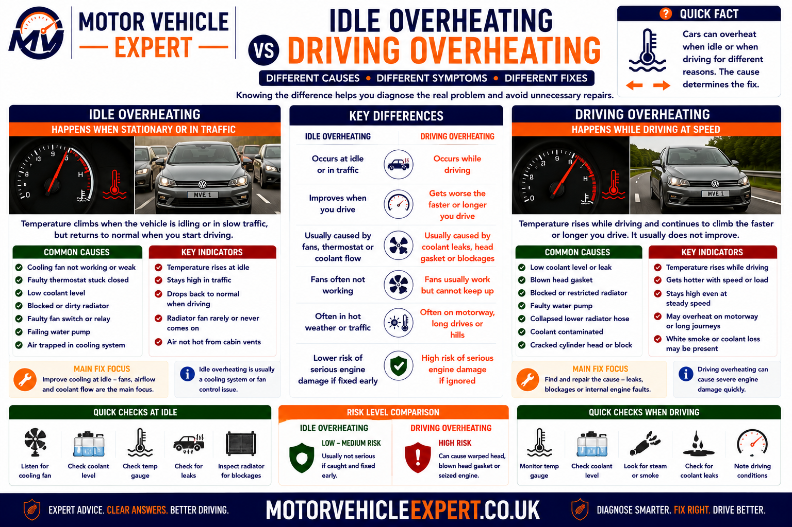
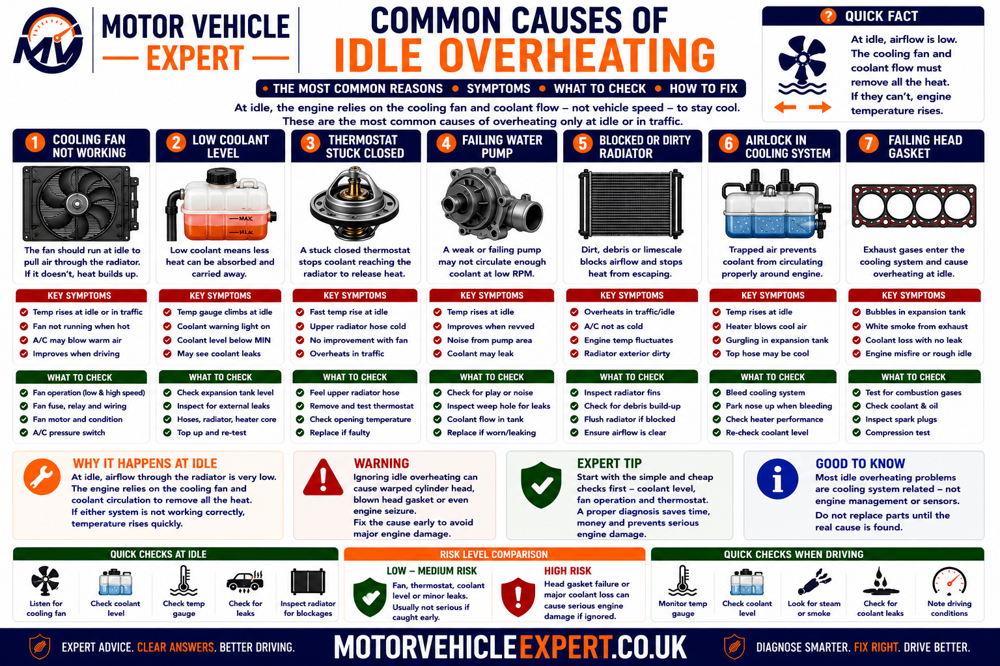
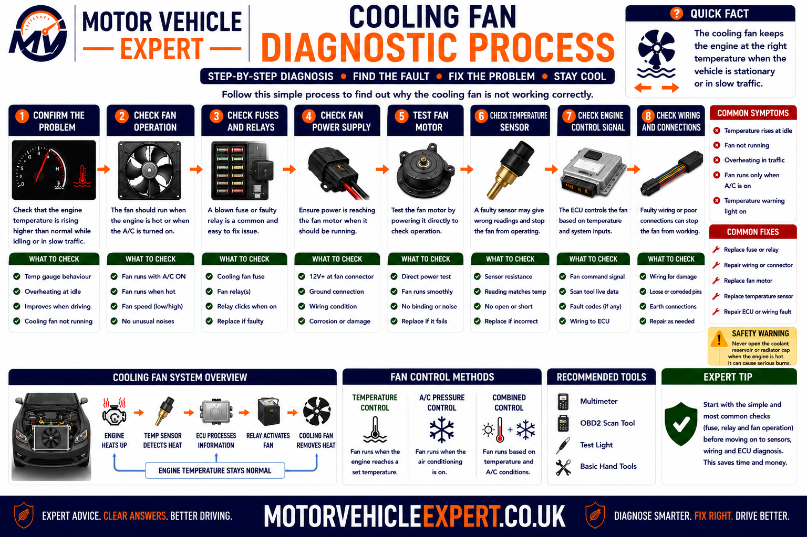
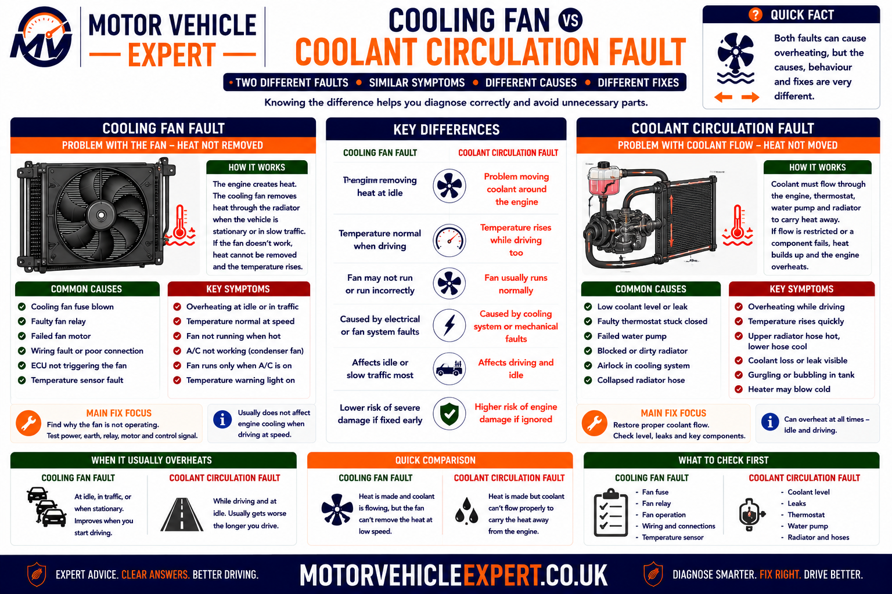
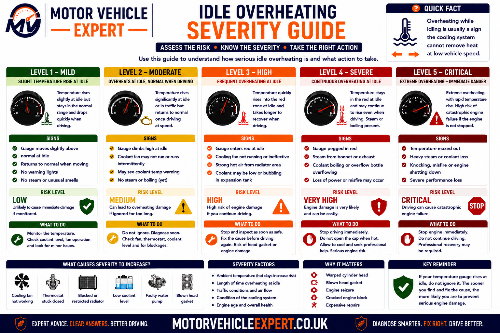
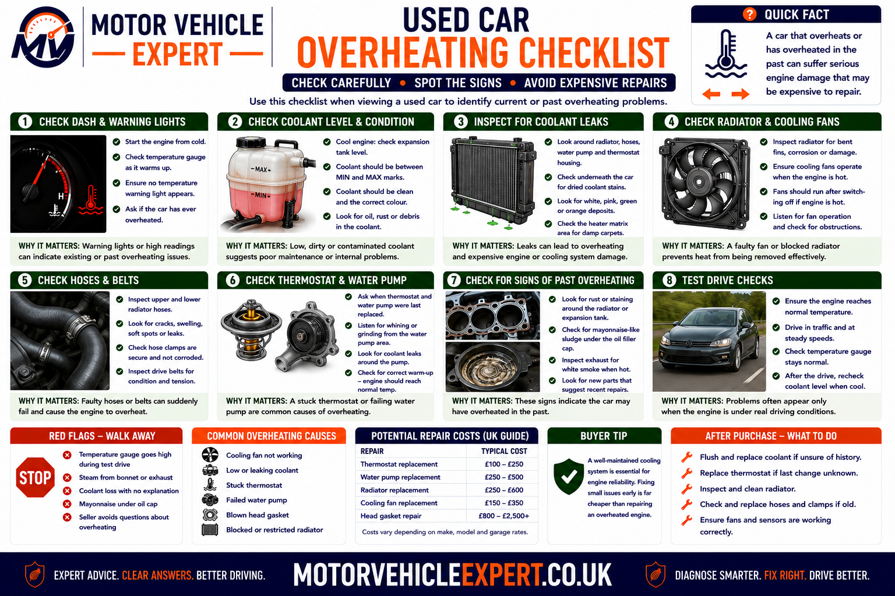
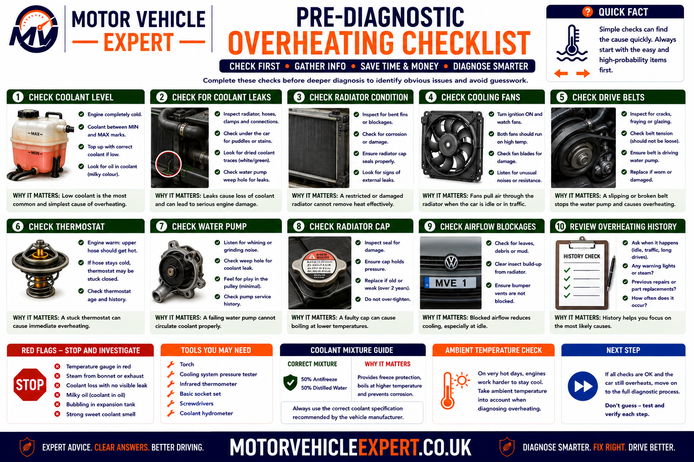

Use the Diagnostic App for Idle-Overheating Problems
Overheating at idle can begin with missing radiator airflow, poor coolant circulation, coolant loss or excessive cooling-system pressure. The Motor Vehicle Expert diagnostic app can help you classify the symptom before parts are replaced.
1. Identify the Pattern
Record whether temperature rises only when stationary or also during normal driving.
2. Observe Fan Operation
Note whether the fan starts, changes speed and responds when the air conditioning is selected.
3. Check Coolant Clues
Record coolant loss, heater output, visible leakage, bubbling and pressure symptoms.
4. Judge the Urgency
Decide whether prompt garage diagnosis or immediate engine shutdown and recovery are required.
A temperature that falls quickly once the vehicle moves supports an airflow or cooling-fan problem. Temperature that remains high while driving makes coolant circulation, radiator restriction or internal engine faults more likely.
Why Does an Engine Overheat When Idle?
An engine commonly overheats at idle because there is not enough airflow through the radiator while the vehicle is stationary. The electric cooling fan should replace the airflow normally created by road speed. If the fan motor, fuse, relay, resistor, control module, wiring or temperature input fails, coolant temperature can rise in traffic and fall again once the vehicle starts moving.
A fan fault is not the only possibility. Low coolant, trapped air, a thermostat that opens late, a weak water pump, blocked radiator, failed pressure cap or combustion gases entering the cooling system can also cause idle overheating.
Hot at Idle, Cooler When Moving
More likely to involve the cooling fan, fan controls or restricted airflow through the radiator and condenser.
Fan Runs but Temperature Rises
More likely to involve low coolant, trapped air, thermostat, water-pump, radiator or pressure problems.
Heater Blows Cold
More likely to involve low coolant, an airlock or poor coolant circulation through the engine and heater matrix.
Bubbling or Rapid Pressure
May involve boiling coolant, trapped air, cap failure or combustion gases entering the cooling system.
Typical Clues
- ✓ Temperature rises mainly while stationary.
- ✓ Road speed lowers the temperature.
- ✓ The cooling fan does not operate.
- ✓ Air-conditioning use makes the fault worse.
- ✓ One fan speed works but another does not.
- ✓ Coolant level remains stable.
Typical Clues
- ✓ The fan runs strongly but overheating continues.
- ✓ The cabin heater becomes weak or cold.
- ✓ Coolant level repeatedly drops.
- ✓ Temperature remains high while driving.
- ✓ Hoses show abnormal temperature differences.
- ✓ Bubbling or rapid pressure returns after bleeding.
Do not replace the cooling fan simply because the vehicle overheats in traffic. Confirm whether the engine control unit is commanding the fan and whether power, earth and control signals reach the motor.
Hot pressurised coolant can erupt from the expansion tank or radiator and cause severe burns. Allow the engine to cool fully before checking the level or removing any cap.
Is Engine Overheating at Idle Serious?
Yes. An engine that repeatedly overheats while idling has lost part of its ability to control temperature under low-airflow conditions. The fault may begin with a relatively simple cooling fan relay or sensor problem, but continued overheating can damage the head gasket, distort the cylinder head, weaken engine oil and harm internal engine components.
The fact that temperature falls when the vehicle begins moving does not make the fault harmless. Road airflow may temporarily compensate for a failed fan or marginal radiator, but the temperature can rise again as soon as traffic slows.
Small Controlled Rise
Lower ConcernThe gauge remains within its normal range, the fan cycles and no coolant loss or warning message appears.
Repeated Traffic Overheating
Moderate ConcernTemperature repeatedly climbs above normal while stationary but falls again at road speed.
Warning Light or Coolant Loss
High ConcernA temperature warning, repeated coolant loss, cold heater or aggressive bubbling indicates a significant fault.
Steam or Red-Zone Temperature
UrgentSteam, coolant discharge, severe power loss or a red warning requires immediate shutdown and recovery.
Early Warning Signs
- ✓ Temperature rises repeatedly in traffic.
- ✓ The cooling fan works intermittently.
- ✓ Air-conditioning use raises the temperature.
- ✓ Coolant requires occasional topping up.
- ✓ The heater output changes unexpectedly.
- ✓ A sweet coolant smell appears after driving.
Urgent Warning Signs
- ! The gauge enters the red zone.
- ! An overheating warning remains illuminated.
- ! Steam appears from the engine compartment.
- ! Coolant pours from the expansion tank.
- ! The cabin heater suddenly blows cold.
- ! The engine loses power, knocks or runs badly.
Aluminium cylinder heads can distort when overheated. Continuing to drive may turn a fan, hose or thermostat repair into a head-gasket, cylinder-head or replacement-engine job.
Normal Temperature Movement vs Genuine Overheating
Cooling-system temperature naturally changes as engine load, airflow and fan operation vary. A small controlled change within the manufacturer’s intended range is not the same as an overheating condition.
Many dashboard gauges are deliberately damped, meaning the needle remains near the centre across a range of normal coolant temperatures. A noticeable climb above its usual position may therefore represent a meaningful temperature increase.
Normal Warm-Up
The temperature rises gradually from cold and then stabilises without a warning message or coolant loss.
Normal Fan Cycling
The fan starts as temperature or air-conditioning pressure rises and stops again once sufficient cooling is achieved.
Normal Gauge Stability
The needle remains around its established operating position during traffic and normal driving.
Abnormal Gauge Climb
The needle rises beyond its usual position and continues climbing instead of stabilising.
Overtemperature Warning
A red symbol, warning message or audible alert indicates that the control system has detected excessive temperature.
Boiling or Coolant Discharge
Bubbling, steam or coolant release confirms that heat or pressure control has been lost.
Cold Heater During a Hot Event
Loss of cabin heat can indicate that hot coolant is no longer circulating through the heater matrix.
Cooling Fan Runs Continuously
Continuous high-speed operation may be a protective response to high temperature, missing sensor data or air-conditioning pressure.
Temperature Data Disagrees
Dashboard, scan-tool and measured temperatures that do not agree may indicate sensor or communication faults.
| Observed behaviour | Likely interpretation | Recommended response |
|---|---|---|
| Gauge reaches normal position and remains stable | Normal operating-temperature control | Continue monitoring |
| Fan cycles and gauge remains controlled | Cooling fan is responding to heat load | No overheating fault confirmed |
| Gauge rises above its usual position in traffic | Low-speed cooling is becoming inadequate | Arrange cooling-system diagnosis |
| Warning appears but gauge looks normal | Sensor, gauge or genuine temperature issue | Trust the warning and verify temperature safely |
| Steam or coolant escapes | Severe overheating or pressure loss | Stop the engine and recover the vehicle |
Gauge layouts and control strategies differ between vehicles. Use the handbook, warning messages and diagnostic temperature data rather than assuming every vehicle must sit at the same gauge position.
Idle Overheating vs Overheating While Driving
The conditions under which temperature rises help separate an airflow problem from a coolant-circulation or heat-load problem. Overheating only while stationary points more strongly towards fan airflow, while overheating at road speed widens the diagnosis.

Temperature that drops with road speed supports an airflow fault, while overheating during both stationary and moving operation makes coolant flow, radiator capacity and internal engine faults more likely.
More Likely Causes
- ✓ Cooling fan does not operate.
- ✓ Low fan speed has failed.
- ✓ Fan relay or control module is faulty.
- ✓ Fan power or earth circuit has high resistance.
- ✓ Radiator and condenser fins are externally blocked.
- ✓ Fan direction or airflow is incorrect.
More Likely Causes
- ✓ Coolant level is low.
- ✓ Air is trapped in the cooling system.
- ✓ The thermostat is restricted or stuck.
- ✓ Water-pump circulation is weak.
- ✓ The radiator is internally restricted.
- ✓ Combustion gases are entering the coolant.
| Overheating pattern | Diagnostic direction | Important checks |
|---|---|---|
| Hot at idle, cool at normal road speed | Low-speed radiator airflow | Fan command, fan speed and radiator airflow |
| Hot in traffic and with air conditioning | Fan capacity or condenser heat load | Fan stages, condenser blockage and system pressure |
| Hot at idle and during normal driving | Coolant circulation or heat rejection | Coolant, thermostat, pump and radiator |
| Hot mainly during motorway or uphill load | Cooling capacity under engine load | Radiator flow, pump, combustion and mixture faults |
| Temperature changes rapidly and heater varies | Low coolant or trapped air | Leak test, bleeding and coolant circulation |
| Temperature rises soon after a cold start | Severe circulation or combustion-pressure fault | Thermostat, pump and combustion-gas testing |
A partially blocked radiator may be manageable at road speed until a weak cooling fan removes the remaining idle capacity. Diagnose the complete cooling system rather than stopping after the first defect is found.
Why Does the Temperature Drop When the Car Starts Moving?
When the vehicle moves, air is forced through the grille, air-conditioning condenser and radiator. This airflow carries heat away from the coolant flowing through the radiator tubes.
At idle, natural airflow is very low, so the cooling fan must pull or push air through the heat exchangers. If fan airflow is missing or weak, the cooling system may depend almost entirely on vehicle speed.
Road-Speed Ram Air
Forward movement naturally forces a large volume of air through the front cooling pack.
Electric Fan Airflow
The fan replaces road airflow during idling, low-speed traffic and air-conditioning operation.
Radiator Heat Transfer
Hot coolant releases heat into radiator tubes and fins before airflow carries it away.
Condenser Heat Load
The air-conditioning condenser releases heat directly in front of the radiator.
Fan Shroud Function
The shroud helps the fan draw air through the complete radiator area instead of only around the blade tips.
Cooling-Pack Seals
Missing ducting and seals can allow air to bypass the radiator instead of flowing through it.
Blocked Grille or Fins
Leaves, dirt, insects and damaged fins reduce the amount of air that reaches the radiator.
Fan Rotation Direction
Incorrect wiring or the wrong replacement fan can move air in the wrong direction.
Engine-Bay Heat Soak
Stationary operation traps heat around the engine, turbocharger and exhaust system.
The fault remains present and may return immediately in traffic, at a junction or during parking. Fan and airflow operation must be restored rather than avoided.
Why Does an Engine Overheat in Traffic?
Traffic combines low road airflow, prolonged engine operation, repeated acceleration and heat soak from surrounding vehicles. These conditions expose a cooling system that has little remaining capacity.
Cooling Fan Does Not Start
Without fan airflow, radiator heat removal may fall sharply as the vehicle stops.
Only High Fan Speed Works
Temperature may climb higher than normal before the remaining fan stage eventually operates.
Fan Motor Turns Slowly
Worn brushes, high circuit resistance or a failing control module can reduce airflow.
Radiator Fins Are Restricted
Dirt between the condenser and radiator may not be visible from the front of the vehicle.
Coolant Level Is Marginal
Low coolant may circulate poorly as temperature and pressure change during stop-start use.
Thermostat Opens Late
Restricted flow may become noticeable as heat builds during a long stationary period.
Water Pump Is Weak at Low RPM
A damaged impeller may move less coolant when the engine is turning slowly.
Air Is Trapped in the System
Air pockets can interrupt circulation and make temperatures change unpredictably.
Combustion Pressure Enters Coolant
Gas pockets and excessive pressure can reduce circulation and force coolant from the expansion tank.
Common Traffic Clues
- ✓ Temperature rises only after the vehicle stops.
- ✓ Moving again lowers the temperature.
- ✓ Fan noise is absent when temperature is high.
- ✓ Coolant level remains stable.
- ✓ Cabin heat remains consistently hot.
- ✓ Air-conditioning performance worsens at idle.
Common Traffic Clues
- ✓ Fan runs at high speed.
- ✓ Heater output becomes unstable.
- ✓ Coolant level falls repeatedly.
- ✓ Temperature does not fall reliably when moving.
- ✓ Bubbling or pressure is excessive.
- ✓ Radiator temperatures are uneven.
Increasing engine speed may temporarily improve water-pump or fan output on some systems, but it also creates additional heat. The underlying fault still requires diagnosis.
Why Does the Engine Overheat With the Air Conditioning On?
Air conditioning places additional load on the engine and releases heat through the condenser mounted ahead of the radiator. The cooling fans are normally commanded to operate so that both the refrigerant and engine coolant remain within a safe temperature range.
Fan Does Not Respond to A/C
A fan-control, pressure-sensor, relay, wiring or motor fault may prevent the expected airflow.
Low Fan Speed Has Failed
The system may lose its normal low-speed airflow and wait until temperature rises enough for high speed.
Condenser Is Externally Blocked
Dirt and damaged fins trap additional heat in front of the radiator.
Fan Airflow Is Weak
A slowly turning fan may be unable to remove combined condenser and radiator heat.
Refrigerant Pressure Is Excessive
Poor condenser airflow or system faults can increase load and trigger stronger fan requests.
Cooling System Is Marginal
A partially blocked radiator, weak pump or low coolant may cope until air-conditioning heat is added.
Compressor Load Is Abnormal
Internal compressor problems can increase engine load and belt stress.
Incorrect Fan Command
Engine and climate modules may not request the expected fan stage because of sensor or communication faults.
Cooling-Pack Seals Are Missing
Air may circulate around the condenser and radiator instead of passing through them.
| A/C-related symptom | Possible cause | Recommended check |
|---|---|---|
| Temperature rises immediately after A/C selection | Fan does not respond or cooling capacity is marginal | Check fan command and actual airflow |
| A/C becomes warm while stationary | Poor condenser airflow | Inspect fan operation and condenser restriction |
| Fan runs only at very high speed | Low-speed circuit or resistor fault | Test every fan stage |
| Engine overheats with A/C and without A/C | Broader cooling-system fault | Check coolant circulation and radiator capacity |
| Noise or belt smell appears with A/C | Compressor, pulley or belt fault | Inspect auxiliary drive immediately |
Some systems run the fan immediately, while others respond to refrigerant pressure and coolant temperature. Use live data and the correct wiring information rather than assuming one strategy applies to every car.
Common Causes of Engine Overheating When Idle
Idle overheating most often begins with inadequate radiator airflow, but coolant level, circulation, pressure and internal engine condition must also be considered. Several faults can exist at the same time.

Temperature that falls with road speed supports fan or airflow diagnosis, while overheating despite strong fan operation supports circulation and pressure testing.
Failed Cooling-Fan Motor
Worn brushes, seized bearings or internal electrical failure can stop the fan or reduce its speed.
Blown Fan Fuse
A fuse may fail because of motor overcurrent, a short circuit or damaged wiring.
Faulty Fan Relay
Burnt contacts or a failed relay coil can interrupt fan power.
Fan Resistor or Speed Fault
One fan stage may fail while another still operates.
Fan Control Module Failure
Electronic fan controllers can lose power, communication or output control.
Temperature-Sensor Fault
Incorrect coolant-temperature information can prevent the expected fan command.
Low Coolant Level
Coolant loss reduces heat transfer and allows air to enter the system.
Trapped Air
Air pockets interrupt circulation and can make temperature readings unstable.
Thermostat Restriction
A thermostat that opens late or incompletely limits radiator coolant flow.
Weak Water Pump
A loose or damaged impeller may circulate too little coolant at low engine speed.
Blocked Radiator
Internal deposits or externally restricted fins reduce heat rejection.
Pressure-Cap Fault
Incorrect pressure control can allow early boiling or coolant loss.
Collapsed Coolant Hose
Internal delamination or pressure faults can restrict coolant flow.
Heater-Matrix Restriction
Restricted heater flow may reveal contamination elsewhere in the cooling system.
Head-Gasket Leakage
Combustion gases can pressurise the system, create air pockets and force coolant out.
The blades may rotate while airflow remains weak, and strong fan airflow cannot compensate for severe coolant loss, poor circulation or combustion gases.
How the Cooling System Controls Temperature at Low Speed
At idle, engine heat must be absorbed by the coolant, circulated through the radiator and transferred into fan-driven airflow. Pressure control raises the coolant boiling point, while the thermostat regulates when radiator flow begins.
1. Engine Produces Heat
Combustion, friction and turbocharger or exhaust heat warm the cylinder block and cylinder head.
2. Coolant Absorbs Heat
Correct coolant flows through internal passages surrounding the hottest engine areas.
3. Water Pump Circulates Coolant
The pump moves coolant through the engine, heater circuit and radiator.
4. Thermostat Regulates Flow
The thermostat opens as temperature rises, allowing increased radiator circulation.
5. Radiator Releases Heat
Coolant passes through narrow tubes connected to heat- dissipating fins.
6. Fan Creates Low-Speed Airflow
The electric or mechanically driven fan moves air through the cooling pack while the car is stationary.
7. Pressure Cap Controls Pressure
Correct pressure raises the boiling point and manages coolant expansion and recovery.
8. Control System Adjusts Operation
Temperature, air-conditioning pressure and engine-load data determine fan stages and protective strategies.
| Cooling stage | Possible failure | Typical clue |
|---|---|---|
| Coolant absorbs engine heat | Low coolant, wrong mixture or trapped air | Unstable temperature and heater output |
| Water pump circulates coolant | Damaged impeller, belt or pump drive | Poor circulation despite fan operation |
| Thermostat opens radiator flow | Stuck or slow thermostat | Rapid engine heat with restricted radiator flow |
| Radiator transfers heat | Internal blockage or damaged fins | Uneven radiator temperature and reduced capacity |
| Fan moves air at low speed | Motor, relay, controller or wiring fault | Hot at idle and cooler while moving |
| Cap maintains pressure | Weak, incorrect or blocked cap | Early boiling, coolant loss or recovery problems |
| Engine remains sealed from combustion | Head-gasket or cylinder-head fault | Rapid pressure, bubbling and unexplained coolant loss |
The fan can move air only through the radiator, and the radiator can release heat only if hot coolant reaches it. Every stage must operate correctly for stable idle temperature.
Electric fans can start without warning, even when the engine is switched off. Disconnect and isolate the circuit before working near the blades or shroud.
Cooling-Fan Motor Faults That Cause Idle Overheating
The cooling fan supplies radiator airflow when vehicle speed is too low to provide natural airflow. If the fan motor stops, rotates slowly or works only intermittently, engine temperature can rise during idling, parking and stop-start traffic.
A fan that appears to rotate is not automatically healthy. Worn brushes, damaged bearings, internal winding faults and high electrical resistance can reduce blade speed and airflow without stopping the motor completely.
Worn Motor Brushes
Brush wear can cause intermittent operation, especially after vibration, heat or repeated starting cycles.
Seized Motor Bearings
Tight bearings increase current draw, slow the blades and may repeatedly blow the fan fuse.
Open Motor Windings
An internal break can prevent the motor operating even when correct voltage and earth are present.
Internal Short Circuit
Damaged insulation can produce excessive current draw, relay damage and fuse failure.
Heat-Related Intermittent Failure
The motor may operate when cold but stop once internal resistance and temperature rise.
Slow Fan Speed
A tired motor may turn visibly while producing too little airflow to control coolant temperature.
Damaged Fan Blades
Cracked, missing or incorrectly fitted blades reduce airflow and may create severe vibration.
Loose Fan on Motor Shaft
The motor may spin without transferring full speed to the fan blade assembly.
Incorrect Replacement Motor
Wrong rotation, power rating or blade design can produce inadequate or reversed airflow.
Typical Symptoms
- ✓ The fan receives power but does not turn.
- ✓ The fan starts after the housing is disturbed.
- ✓ Fan speed is visibly weak.
- ✓ The fan becomes noisy or rough.
- ✓ The fan fuse fails repeatedly.
- ✓ Current draw is outside specification.
Continue Circuit Diagnosis If...
- ! No power reaches the motor.
- ! The earth circuit is missing.
- ! Diagnostic fan command is absent.
- ! Only one speed or stage operates.
- ! Wiring voltage drops under load.
- ! Communication or control-module faults are stored.
| Fan behaviour | Possible cause | Recommended test |
|---|---|---|
| Fan does not turn with direct power and earth | Failed fan motor | Confirm supply polarity and replace the motor or assembly |
| Fan turns slowly with correct voltage | Motor wear or excessive mechanical resistance | Measure current draw and airflow |
| Fan works only when cold | Heat-related internal motor fault | Test while the fault temperature is present |
| Fuse blows when the fan starts | Motor overcurrent or wiring short | Measure current and isolate the circuit |
| New fan runs but cooling remains poor | Wrong direction, blade or airflow path | Confirm part number and airflow direction |
Temporary direct-power testing may help confirm motor condition, but permanent bypass wiring removes temperature, current and safety control and can create fire or battery-drain risks.
Cooling-Fan Fuse and Power-Supply Faults
Cooling fans can draw substantial current, particularly during start-up and high-speed operation. Their power circuits normally use dedicated fuses, fusible links, relays and heavy wiring.
A blown fuse is evidence of a fault, not a complete diagnosis. Replacing it without checking motor current and wiring condition may result in repeated failure or overheated electrical components.
Blown Blade or Cartridge Fuse
Excess current from a tight motor or short circuit can open the protective fuse.
Failed Fusible Link
Some fan circuits use a high-current link near the battery or power-distribution unit.
Incorrect Fuse Rating
A fuse with the wrong current rating may fail unnecessarily or leave the circuit inadequately protected.
Heat-Damaged Fuse Holder
Loose terminals increase resistance and can melt the fuse box even when the fuse remains intact.
Battery-Supply Fault
Loose battery connections or distribution faults can reduce fan voltage under load.
Corroded Power Terminal
Corrosion can pass a light test current but fail when the fan demands full power.
Damaged Harness Insulation
Wiring can rub against the radiator support, fan shroud or engine components and short to earth.
Loose Distribution-Box Connection
Poor bolted connections can cause intermittent fan loss and localised heating.
Charging-System Weakness
Low system voltage can reduce fan speed and affect electronic control operation.
A larger fuse may allow the wiring, relay or motor to overheat before protection operates. Identify the excessive current or short circuit instead.
Cooling-Fan Relay Faults
A relay allows a low-current control signal to switch the high-current fan supply. Some vehicles use several relays to create low and high fan speeds, while others integrate switching inside an electronic control module.
Burnt Relay Contacts
Arcing and repeated high-current switching can increase resistance or stop fan power completely.
Open Relay Coil
A failed electromagnetic coil prevents the relay contacts closing when commanded.
Sticking Relay Contacts
Contacts may remain open and stop the fan or remain closed and run it continuously.
Heat-Damaged Relay Socket
Loose terminals can generate heat, discolouration and voltage loss.
Missing Relay Command
The relay may be healthy but receive no control signal because of sensor, ECU or wiring faults.
Incorrect Relay
Terminal layout, internal suppression and current capacity must match the original specification.
| Relay test result | Interpretation | Next action |
|---|---|---|
| Control command present but no switched output | Relay or socket fault | Test relay contacts and terminal tension |
| Relay clicks but fan receives low voltage | Burnt contacts or high-resistance circuit | Perform loaded voltage-drop testing |
| No relay control signal | Sensor, ECU, wiring or operating-condition issue | Verify fan request and control-side circuit |
| Relay replacement restores operation briefly | Motor current may be damaging contacts | Measure fan current before another relay fails |
| Fan remains on after shutdown | Stuck relay or commanded after-run cooling | Compare command state before condemning the relay |
The relay coil may operate while its main contacts remain burnt or resistive. Test the high-current circuit under load.
Cooling-Fan Resistor and Fan-Speed Faults
Many vehicles operate the cooling fan at more than one speed. Traditional systems may use resistors and relays, while newer vehicles use pulse-width control or electronic fan modules.
A failed low-speed circuit can allow the engine to become hotter than normal before high speed begins. Air-conditioning performance may also deteriorate while the vehicle is stationary.
Open Fan Resistor
An internal break can remove low-speed operation while leaving high speed available.
Thermal-Fuse Failure
Some resistor assemblies contain a protective thermal link that opens after overheating.
Corroded Resistor Connector
Heat and moisture near the radiator can damage high-current terminals.
Failed Series-Relay Arrangement
Twin-fan systems may combine motors in series for low speed and parallel for high speed.
PWM Control Fault
A missing or incorrect duty-cycle signal can prevent variable fan speed.
One Fan in a Pair Has Failed
Some systems lose a speed stage or substantial airflow when either motor fails.
High Speed Only
Temperature may fluctuate more widely and fan operation may sound unusually abrupt.
Low Speed Only
The remaining airflow may be inadequate in hot weather, heavy traffic or high air-conditioning load.
Incorrect Fan Coding
Replacement control units may require configuration to match vehicle equipment and fan type.
Common Clues
- ✓ Fan remains off during normal A/C operation.
- ✓ Temperature climbs before the fan starts loudly.
- ✓ Air conditioning becomes warm at idle.
- ✓ High-speed command operates successfully.
- ✓ Resistor or low-speed circuit has no continuity.
Common Clues
- ✓ Fan runs quietly but cannot control rising heat.
- ✓ High-speed diagnostic command fails.
- ✓ Temperature rises during extreme traffic load.
- ✓ One relay or control output is missing.
- ✓ A twin-fan system operates only one motor.
Confirming that the fan runs at one speed does not prove that the complete low-, medium- and high-speed strategy is healthy.
Cooling-Fan Control-Module Faults
Many modern cooling fans contain or rely on an electronic module that controls motor speed according to a command from the engine or climate-control system.
The module may receive battery power, earth and a digital or pulse-width control signal. Diagnosis must prove which input or output is missing before the module or complete fan assembly is replaced.
Internal Power-Transistor Failure
The electronic output stage may no longer supply controlled current to the fan motor.
Water Ingress
Low mounting positions expose fan modules and connectors to road spray and corrosion.
Heat Damage
High current and poor cooling can overheat the module or its connector.
Missing Communication Signal
Network or command-line faults can leave the module powered but unable to receive speed instructions.
Internal Short Circuit
A failed module can blow fuses, drain the battery or keep the fan operating continuously.
Incorrect Replacement Module
Hardware, software and fan-current capacity must match the original vehicle specification.
| Module evidence | Possible conclusion | Required confirmation |
|---|---|---|
| Power, earth and valid command are present | Module or motor assembly fault | Check module output and motor condition |
| No control signal reaches the module | Upstream wiring or ECU command fault | Test command at both ends of the circuit |
| Fan runs permanently at maximum speed | Failsafe strategy or module fault | Check sensor data and stored faults first |
| Module connector is heat damaged | High resistance or excessive current | Repair terminals and measure motor load |
| Replacement module does not respond | Incorrect part, coding or unresolved circuit fault | Verify compatibility and configuration |
Some vehicles run the fan continuously when coolant-temperature data is missing or implausible. The fan itself may be healthy while the control system is protecting the engine.
Cooling-Fan Wiring and Connector Faults
Fan circuits operate in a hot, wet and vibration-prone area. Connectors, splices, earth points and harness sections can fail intermittently or lose voltage only when the motor is under load.
Corroded Fan Connector
Water entry can create green corrosion, poor terminal contact and intermittent fan operation.
Heat-Damaged Terminals
High resistance generates more heat, progressively weakening the connection.
Loose Terminal Tension
A connector may appear fitted while its terminals no longer grip firmly.
Broken Wire Inside Insulation
Repeated flexing can fracture the conductor while leaving the outer insulation intact.
Harness Chafing
Contact with the fan shroud, radiator support or body can damage power and control wires.
Poor Earth Connection
Corrosion or loose fixings can reduce fan speed and overheat connectors.
Water-Damaged Splice
Hidden harness joints may corrode and create several related electrical faults.
Previous Repair Damage
Twisted wires, unsuitable connectors and poor crimping can fail under high fan current.
Rodent or Impact Damage
Wiring near the front bumper may be damaged by animals, collision repairs or road debris.
A corroded wire may show continuity with the fan disconnected but lose several volts when the motor draws current. Test the power and earth circuits while operating.
Can a Coolant-Temperature Sensor Stop the Fan Working?
Yes. The engine control unit normally uses coolant-temperature information to calculate fan operation, fuelling and protective strategies. Incorrect sensor data can delay or prevent the expected fan request.
The sensor should not be replaced from a temperature-related fault code alone. Wiring faults, connector corrosion, low coolant and trapped air around the sensor can all produce implausible readings.
Sensor Reads Too Cold
The control unit may not command the fan at the expected actual engine temperature.
Sensor Reads Too Hot
The fan may run continuously and cold-start fuelling may be affected.
Intermittent Sensor Signal
Temperature data may jump suddenly because of internal or connector faults.
Open-Circuit Wiring
Many vehicles respond with a substitute temperature and maximum fan operation.
Short Circuit
A short to voltage or earth can force an implausibly hot or cold reading.
Poor Connector Contact
Loose or corroded terminals can create intermittent fan control and warning messages.
Low Coolant Around Sensor
A sensor not immersed correctly may fail to represent actual metal temperature.
Trapped Air Pocket
Air around the sensor can create delayed or unstable temperature readings.
Incorrect Sensor Installed
An unsuitable resistance curve or calibration can provide misleading data.
| Temperature-data result | Possible cause | Recommended check |
|---|---|---|
| Cold engine reading differs greatly from ambient | Sensor, wiring or reference fault | Compare coolant and intake-air temperature before start |
| Scan temperature rises smoothly but fan is not commanded | Control strategy, ECU or additional-input issue | Check specified fan-on conditions |
| Fan command appears at a plausible temperature | Sensor input is likely sufficient | Continue with fan output-circuit testing |
| Temperature jumps suddenly | Intermittent sensor or connector fault | Inspect and graph the circuit |
| Gauge and scan data disagree | Separate sensors, network or display fault | Compare against an independent measurement |
Compare scan-tool data, fan commands and suitable temperature measurements. Gauge damping can conceal meaningful temperature changes.
Cooling-Fan Command vs Actual Fan Operation
A strong diagnosis separates the control unit’s decision from the electrical and mechanical response. The ECU may request fan operation correctly even though the motor, relay, module or wiring fails to deliver it.
1. Read Actual Temperature
Confirm that coolant-temperature data is plausible and rising under controlled conditions.
2. Monitor Fan Request
Observe commanded fan percentage, stage or relay status where diagnostic data supports it.
3. Command the Fan Directly
Use bidirectional diagnostic control to request available fan speeds where supported.
4. Measure the Response
Confirm voltage, earth, current draw, blade speed and airflow.
| Command state | Actual fan state | Diagnostic direction |
|---|---|---|
| No fan command despite genuine high temperature | Fan remains off | Investigate sensor input, control strategy and ECU output |
| Fan command present | Fan remains off | Test relay, module, power, earth and motor |
| High-speed command present | Fan operates slowly | Check voltage drop, motor wear and incorrect fan assembly |
| Fan command absent at low temperature | Fan runs at maximum speed | Check failsafe operation, stuck relay or module fault |
| All commands and fan speeds operate | Engine still overheats | Move diagnosis to coolant circulation and heat rejection |
If the fan responds correctly to a scan-tool command, its motor and main output circuit may be healthy. The remaining diagnosis should focus on automatic command conditions and sensor inputs.
Why Does the Engine Overheat Even Though the Fan Runs?
A running fan confirms only that the blades rotate. It does not prove that airflow is strong, coolant reaches the radiator or the radiator can release enough heat.
Fan Speed Is Too Low
Motor wear or circuit resistance can leave visible rotation without sufficient airflow.
Fan Turns in the Wrong Direction
Incorrect wiring or replacement parts can move air away from the intended path.
Fan Shroud Is Missing or Damaged
Air can recirculate around the blade rather than passing through the radiator core.
Radiator Fins Are Blocked
Strong fan operation cannot pull sufficient air through dirt, leaves or heavily damaged fins.
Coolant Level Is Low
The fan cannot cool radiator sections that contain air instead of circulating coolant.
Thermostat Restricts Flow
Hot engine coolant may not reach the radiator in sufficient quantity.
Water Pump Is Weak
A damaged impeller may fail to circulate coolant despite correct fan airflow.
Radiator Is Internally Blocked
Deposits and corrosion reduce active cooling area and coolant distribution.
Combustion Gas Displaces Coolant
Gas pockets and pressure can interrupt circulation and force coolant from the system.
High-speed fan operation may indicate that the control system is already responding to excessive temperature. Check whether the coolant temperature actually falls after the fan starts.
Cooling-Fan Fault vs Coolant-Circulation Fault
Airflow and coolant circulation work together. A fan fault reduces the air passing across the radiator, while a circulation fault prevents enough hot coolant reaching or moving through the radiator.

Idle-only overheating that improves quickly with road speed supports fan diagnosis, while poor heater output and overheating despite fan operation support circulation testing.
More Likely When
- ✓ Temperature rises mainly while stationary.
- ✓ Normal road speed lowers temperature quickly.
- ✓ The fan is off, slow or missing one speed.
- ✓ Cabin heater output remains consistently hot.
- ✓ Coolant level remains stable.
- ✓ Radiator inlet and outlet both become hot.
More Likely When
- ✓ The fan runs strongly but temperature continues rising.
- ✓ Overheating also occurs while driving.
- ✓ Cabin heat becomes weak or cold.
- ✓ Coolant level drops or contains air.
- ✓ Radiator or hose temperatures are uneven.
- ✓ Bubbling or rapid pressure develops.
| Diagnostic clue | Fan-fault pattern | Circulation-fault pattern |
|---|---|---|
| Effect of road speed | Temperature usually falls clearly | Temperature may remain high |
| Fan operation | Off, slow or missing a stage | May operate normally or at high speed |
| Cabin heater | Usually remains hot | May become weak, intermittent or cold |
| Coolant level | Often remains stable | May be low or repeatedly fall |
| Radiator temperature | Hot but inadequately air-cooled | May contain cold sections or poor flow |
| Pressure and bubbling | Not normally the primary clue | Can indicate air, boiling or combustion gas |
Confirm that the fan moves enough air through the radiator, then confirm that hot coolant circulates through the radiator core. One working stage cannot prove the other.
Cooling-Fan Diagnostic Process
A professional cooling-fan diagnosis should confirm the complaint, verify the actual coolant temperature and determine whether the control unit requests fan operation before testing the high-current output circuit.

The correct sequence separates missing fan command from failed relays, wiring, control modules and fan motors before parts are replaced.
1. Confirm the Overheating Pattern
Verify that temperature rises at low speed and compare the result once road airflow increases.
2. Verify Actual Temperature
Compare dashboard indication, scan data and suitable independent temperature measurements.
3. Inspect Coolant First
Confirm the cold level, visible leaks and safe system condition before controlled heating.
4. Scan Relevant Modules
Record engine, fan, climate-control and communication faults before clearing anything.
5. Monitor Fan Command
Observe requested fan percentage, relay status or fan stage as temperature rises.
6. Perform an Actuator Test
Command low and high fan speeds with diagnostic equipment where supported.
7. Test the Loaded Circuit
Measure fuse supply, relay output, voltage drop, earth quality and fan current.
8. Confirm Airflow and Repair
Verify blade direction, fan speed, shroud condition and temperature reduction after repair.
| Diagnostic result | Likely fault area | Next action |
|---|---|---|
| Temperature data is implausible | Sensor, wiring, low coolant or air pocket | Correct the input fault before fan diagnosis |
| Temperature is high but no fan command appears | Control strategy, ECU input or output | Check specified conditions and command circuit |
| Command appears but relay does not switch | Relay, socket or control wiring | Test coil supply, control and contacts |
| Relay output is correct but fan is stationary | Motor, connector or earth fault | Test voltage drop and motor current |
| Fan runs slowly with full command | Motor wear, voltage loss or wrong assembly | Compare current, speed and airflow |
| Fan stages operate and airflow is strong | Coolant circulation or heat-rejection fault | Continue with thermostat, pump and radiator tests |
Controlled diagnosis must stop before temperature reaches a damaging level. Diagnostic commands should be used to test the fan without relying on severe overheating to trigger it.
After electrical repair, allow the engine to reach normal operating temperature, confirm every fan stage and verify that coolant temperature stabilises during stationary operation.
Can Low Coolant Cause Overheating at Idle?
Yes. Low coolant reduces the volume available to absorb engine heat and may expose internal passages, the heater circuit or the temperature sensor to air. Circulation can become unstable, particularly at low engine speed.
Coolant does not normally disappear through routine operation. Repeated topping up means the system has an external leak, pressure-control fault or internal engine problem that must be identified.
Reduced Heat Capacity
Less coolant is available to absorb and transfer heat from the cylinder block and cylinder head.
Air Enters the System
Falling coolant level can allow air pockets to interrupt pump, thermostat, heater and sensor operation.
Heater Output Changes
Cabin heat may become weak or cold when the heater matrix no longer receives a stable supply of hot coolant.
Water Pump Loses Prime
A pump moving a mixture of coolant and air cannot circulate heat as effectively.
Sensor Reading Becomes Unreliable
A sensor exposed to steam or trapped air may not represent the hottest metal temperature accurately.
Localised Boiling Develops
Low flow and exposed hot surfaces can create steam pockets before the complete coolant volume appears overheated.
What You May Notice
- ✓ The cold level falls below the minimum mark.
- ✓ Heater output becomes intermittent.
- ✓ Gurgling is heard behind the dashboard.
- ✓ Temperature changes rapidly.
- ✓ A sweet smell appears inside or outside the car.
- ✓ Coolant requires repeated topping up.
What Should Be Done
- ✓ Allow the engine to cool fully.
- ✓ Confirm the level using the correct procedure.
- ✓ Inspect for visible leakage and staining.
- ✓ Pressure-test the cooling system.
- ✓ Repair the source before refilling.
- ✓ Bleed and verify the system afterwards.
Removing the cap can release boiling coolant and steam. Allow the engine to cool completely before checking the level.
External Coolant Leaks That Cause Overheating
Coolant may escape only when the system is hot and pressurised, making the leak difficult to see on a cold parked vehicle. Residue, staining and smell can remain after the liquid has evaporated.
Radiator Leak
Plastic end tanks, tube joints and damaged cores can leak under heat and pressure.
Expansion-Tank Crack
Fine cracks around seams, hose connections and cap necks may open only when hot.
Coolant-Hose Leak
Ageing rubber, damaged clips and plastic connectors can release coolant gradually or suddenly.
Thermostat-Housing Leak
Plastic housings and seals commonly distort or crack with age.
Water-Pump Leak
Shaft seals and housing gaskets can leave staining near the pump or timing-belt cover.
Heater-Matrix Leak
Coolant may enter the cabin, mist the windows or wet the passenger footwell.
Heater-Hose Connection
Quick-release connectors and bulkhead fittings may leak at the rear of the engine bay.
Oil-Cooler Housing Leak
Coolant passages around oil coolers and filter housings can leak externally or mix fluids internally.
Turbocharger Coolant Leak
Water-cooled turbochargers use hoses and fittings that may leak close to very hot components.
Core-Plug Leak
Corroded or disturbed engine core plugs can release coolant from the block or cylinder head.
Bleed-Screw Leak
Plastic bleed screws and sealing washers can crack or fail after servicing.
Pressure-Cap Discharge
Coolant around the cap may result from cap failure, overfilling or excessive internal pressure.
| Leak clue | Possible location | Recommended check |
|---|---|---|
| Puddle near the front of the vehicle | Radiator, lower hose or expansion tank | Pressure-test and inspect the cooling pack |
| Leak near the auxiliary or timing belt | Water pump or thermostat housing | Inspect pump vent, seals and surrounding covers |
| Sweet smell or wet carpet inside | Heater matrix or heater-hose connection | Inspect cabin and bulkhead connections |
| Coolant around the cap neck | Cap, tank crack or excessive pressure | Test cap and system pressure behaviour |
| No visible leak but level keeps falling | Hot-only leak or internal engine fault | Pressure-test cold and hot, then test internally |
Photographs and staining patterns can help locate an intermittent leak. Cleaning too early may remove useful evidence.
Can an Airlock Cause Overheating in Traffic?
Yes. Trapped air can interrupt coolant circulation, reduce heater output and prevent the thermostat or temperature sensor from being exposed to a stable coolant flow.
Airlocks commonly develop after coolant loss, component replacement or incorrect refilling. Repeated air entry after correct bleeding suggests an unresolved leak or combustion-gas fault.
Incorrect Refilling Procedure
Filling too quickly or without opening specified bleed points can trap air in high sections.
Vacuum-Fill Not Used
Some complex systems are difficult to fill completely without vacuum equipment.
Bleed Screw Left Closed
Air cannot escape from the heater, cylinder head or upper hose where a bleed point is provided.
Heater Circuit Not Open
Certain vehicles require a heater setting or valve command during bleeding.
Electric Pump Not Activated
Some cooling systems require a diagnostic or ignition-based pump-bleeding routine.
Leak Draws Air Back In
As the system cools, a failed cap or hose connection can admit air instead of recovered coolant.
Expansion Tank Positioned Too Low
Some procedures require the tank or filling equipment to be raised to purge high points.
Combustion Gas Recreates Air Pockets
A head-gasket or cylinder-head fault can refill the system with gas after apparently successful bleeding.
Blocked Small Return Hose
Restricted bleed or degas lines can prevent air returning to the expansion tank.
Common Symptoms
- ✓ Heater output changes hot to cold.
- ✓ Gurgling is heard after start-up.
- ✓ Temperature rises and falls rapidly.
- ✓ Upper hoses contain intermittent coolant flow.
- ✓ The fault began after cooling-system work.
- ✓ Bleeding temporarily improves the problem.
Escalate Testing If...
- ! Air returns after correct vacuum filling.
- ! Hoses harden rapidly from cold.
- ! Continuous bubbles appear immediately after start-up.
- ! Coolant is repeatedly forced from the tank.
- ! No external leak explains the coolant loss.
- ! Overheating returns after correct bleeding.
Generic bleeding methods may not operate electric pumps, heater valves or dedicated bleed points correctly.
Coolant-Circulation Faults That Cause Idle Overheating
The cooling fan can remove heat only when hot coolant reaches the radiator. Restricted or unstable circulation can leave the fan operating at high speed while engine temperature continues to rise.
Low Coolant
Insufficient coolant allows air pockets and unstable pump operation.
Trapped Air
Air can interrupt thermostat, heater and water-pump flow.
Thermostat Restriction
A partially opening thermostat limits the volume reaching the radiator.
Damaged Pump Impeller
A loose, eroded or broken impeller can turn without moving enough coolant.
Slipping Pump Drive
A belt, pulley or internal drive fault can reduce pump speed.
Internal Radiator Restriction
Deposits reduce active tubes and create uneven temperature across the core.
Collapsed Hose
Internal hose delamination can restrict flow even when the outside looks normal.
Blocked Cylinder-Head Passage
Corrosion products or unsuitable sealants can obstruct internal coolant galleries.
Combustion-Gas Displacement
Gas entering the system can interrupt pump flow and displace coolant from hot engine areas.
Hose and radiator temperature patterns help identify where hot coolant stops flowing or where heat transfer becomes restricted.
Can a Thermostat Cause Overheating Only at Idle?
Yes, although a completely stuck thermostat commonly causes overheating during both idling and driving. A thermostat that opens late, incompletely or inconsistently may create a marginal flow restriction that becomes more obvious in traffic.
Stuck Closed
Hot coolant remains largely trapped inside the engine and cannot flow through the radiator.
Opens Too Late
Temperature rises excessively before meaningful radiator flow begins.
Opens Only Partly
Restricted flow may cope during light operation but fail under traffic or additional heat load.
Intermittent Sticking
Wax-element or mechanical damage can make behaviour vary between journeys.
Incorrect Opening Temperature
An unsuitable replacement thermostat can alter warm-up and fan behaviour.
Installed Incorrectly
Wrong orientation or misplaced seals can restrict flow or prevent correct bleeding.
Electronic Thermostat Fault
Some thermostats use a heating element controlled by the engine management system.
Housing Distortion
A warped housing can create leakage, poor sealing or restricted thermostat movement.
Debris Around the Valve
Sealant, corrosion or broken plastic can obstruct thermostat operation.
| Thermostat clue | Possible interpretation | Recommended check |
|---|---|---|
| Engine becomes hot but radiator remains cool | Thermostat not opening or no pump flow | Compare hose temperatures and circulation |
| Radiator flow begins at an excessive temperature | Thermostat opens late | Compare actual opening with specification |
| Temperature improves after thermostat replacement | Restriction was likely present | Verify fan, bleeding and final temperature control |
| New thermostat does not solve overheating | Pump, radiator, airlock or internal fault remains | Continue complete circulation testing |
| Engine takes too long to warm | Thermostat may be stuck open | Check warm-up data and cabin heat |
Running without the correct thermostat can disturb warm-up, coolant routing, emissions, fuel economy and temperature control.
Can a Weak Water Pump Cause Idle Overheating?
Yes. A damaged or slipping pump impeller may move too little coolant at idle and improve slightly as engine speed rises. Other water-pump faults cause overheating at all speeds, coolant leakage or bearing noise.
Loose Impeller
The shaft may rotate while the impeller slips and moves insufficient coolant.
Broken Impeller Blades
Plastic or corroded blades can lose pumping capacity.
Eroded Impeller
Cavitation, corrosion and incorrect coolant can reduce blade efficiency.
Seized Pump Bearing
Bearing failure can stop circulation and damage the timing or auxiliary belt.
Worn Pump Bearing
Play may create noise, leakage and pulley misalignment.
Pump-Seal Leakage
Coolant may escape from a vent hole before major bearing failure.
Slipping Drive Belt
A loose, glazed or contaminated belt can reduce mechanical pump speed.
Electric Pump Failure
Some engines use electrically controlled main or auxiliary coolant pumps.
Incorrect Replacement Pump
Wrong impeller design or rotation can produce poor circulation.
Typical Clues
- ✓ Heater output weakens as temperature rises.
- ✓ Pump area shows coolant staining.
- ✓ Bearing noise or pulley play is present.
- ✓ Circulation improves with engine speed.
- ✓ Radiator flow remains weak despite thermostat opening.
- ✓ Electric-pump commands or feedback are abnormal.
Typical Clues
- ✓ Engine becomes hot before radiator flow begins.
- ✓ The radiator stays cool while the engine heats rapidly.
- ✓ Pump shows no noise, leakage or drive fault.
- ✓ Flow changes abruptly when the thermostat opens.
- ✓ The fault matches an incorrect opening temperature.
- ✓ No continuous combustion-pressure signs are present.
Pump seizure or bearing collapse can damage or displace the timing belt on some engines. Stop the engine if serious pump noise, leakage or pulley movement is present.
Thermostat vs Water-Pump Overheating
Thermostat and water-pump faults both reduce radiator circulation, but they fail in different ways. The thermostat controls when and how much flow reaches the radiator, while the pump creates the circulation itself.

A cool radiator beside a rapidly heating engine can involve either fault, so pump drive, heater flow and thermostat opening must be compared rather than guessed.
More Likely When
- ✓ Temperature rises before radiator flow begins.
- ✓ Upper and lower hose temperatures differ sharply.
- ✓ Heater output remains reasonably strong.
- ✓ Pump shows no leak or bearing noise.
- ✓ Flow begins suddenly at an excessive temperature.
- ✓ Overheating may continue at road speed.
More Likely When
- ✓ Heater output weakens or fluctuates.
- ✓ Pump area leaks or makes noise.
- ✓ Circulation changes with engine speed.
- ✓ Thermostat is open but radiator flow remains weak.
- ✓ Electric pump fails an actuator test.
- ✓ Belt, pulley or pump drive is damaged.
| Comparison point | Thermostat fault | Water-pump fault |
|---|---|---|
| Primary function lost | Flow regulation | Coolant circulation |
| Heater output | May remain hot | May become weak or intermittent |
| Mechanical noise | Uncommon | Bearing or belt noise may be present |
| External leakage | Possible at housing | Common around pump seal or gasket |
| Effect of engine speed | Restriction usually remains | Weak flow may improve temporarily |
| Confirmation | Opening and hose-temperature evidence | Drive, flow, leakage and pump-condition evidence |
Combined replacement may be sensible where labour overlaps or maintenance history supports it, but diagnosis should still explain which component failed.
Can a Blocked Radiator Cause Overheating While Stationary?
Yes. Internal restriction reduces coolant distribution through the core, while external blockage reduces air movement across the fins. A partially restricted radiator may fail first during traffic, hot weather or air-conditioning use.
Internal Corrosion
Incorrect coolant, neglected replacement intervals and mixed coolant types can create deposits.
Stop-Leak Contamination
Excess sealing product can block narrow radiator and heater passages.
Oil Contamination
Oil entering the coolant can coat surfaces and reduce heat transfer.
Scale and Mineral Deposits
Unsuitable water can leave mineral deposits within radiator tubes.
Collapsed Internal Tube
Physical damage or manufacturing failure can restrict sections of the radiator.
Cold Sections Across the Core
Uneven surface temperature can indicate inactive or blocked tubes.
A thermostat that has not opened or low coolant can also leave the radiator cool. Confirm coolant flow before condemning the core.
External Radiator and Condenser Airflow Restriction
The front cooling pack can become blocked even when its visible outer surface looks acceptable. Dirt and debris often collect between the air-conditioning condenser and radiator.
Leaves and Road Debris
Organic material can build up between heat exchangers and trap moisture.
Insects and Dirt
Fine contamination reduces the open area available for airflow.
Bent Radiator Fins
Pressure washing, impact and careless repair work can flatten cooling fins.
Blocked Grille
Accessories, number-plate positioning and damage can reduce front air entry.
Missing Air Guides
Ducts and seals direct air through rather than around the radiator.
Incorrect Fan Shroud
A missing or damaged shroud reduces fan efficiency at idle.
Excessive water pressure can fold delicate fins and worsen airflow. Severe contamination may require careful separation of the cooling pack.
Can a Faulty Coolant Cap Cause Overheating?
Yes. The radiator or expansion-tank cap controls system pressure and coolant recovery. Correct pressure raises the coolant boiling point and helps prevent vapour pockets.
Cap Opens Too Early
Low retained pressure can allow boiling and coolant discharge below the intended temperature.
Cap Does Not Hold Pressure
Damaged seals or a weak spring can allow pressure and coolant to escape.
Vacuum Valve Sticks
Coolant may not return correctly as the system cools, allowing hoses to collapse or air to enter.
Incorrect Pressure Rating
A non-matching cap can release too early or stress system components.
Damaged Cap Neck
Cracks and distorted sealing surfaces can prevent a new cap sealing correctly.
Blocked Vent or Recovery Path
Restrictions can disturb expansion and coolant return.
| Pressure symptom | Possible cause | Recommended check |
|---|---|---|
| Coolant escapes around the cap | Weak cap, damaged neck or excessive pressure | Test the cap and system separately |
| Hose collapses as the engine cools | Vacuum valve or recovery fault | Inspect cap and return path |
| Coolant boils without extreme indicated temperature | Pressure not being maintained | Test cap opening pressure |
| New cap does not stop coolant discharge | Internal pressure or overheating remains | Test for combustion gases and circulation faults |
| Hoses become hard immediately from cold | Combustion pressure more likely than cap alone | Stop and complete internal-engine testing |
A clean cap can still have weak springs or damaged seals, while coolant around the cap may result from excessive internal pressure rather than cap failure.
What Does Cabin-Heater Output Reveal?
The heater matrix is a small radiator supplied by engine coolant. Its output provides useful evidence about coolant level and circulation, although climate-control doors and valves can create separate heater faults.
Heater Remains Hot
Coolant is probably reaching the heater circuit, supporting an airflow or radiator-capacity diagnosis.
Heater Turns Cold Suddenly
Low coolant, trapped air or pump-flow loss may have interrupted heater circulation.
Heater Changes With Engine Speed
Weak pump flow, low coolant or air may improve temporarily as pump speed increases.
One Heater Hose Hot, One Cold
The heater matrix or valve may be restricted.
Both Heater Hoses Cool
Coolant may not be reaching the heater circuit.
Sweet Smell Inside
A heater-matrix or cabin hose leak may release coolant vapour.
Windows Mist With Oily Film
Coolant vapour from the heater matrix may coat the windscreen.
Wet Passenger Footwell
Liquid coolant may be escaping from the heater unit or pipework.
Heater Cold but Hoses Hot
A blend-door, valve or climate-control fault may be responsible rather than coolant flow.
The engine may have very little circulating coolant. Stop safely and switch off rather than using the heater symptom as a reason to continue driving.
Can a Head Gasket Cause Overheating at Idle?
Yes. A leaking head gasket, cracked cylinder head or damaged engine block can allow combustion pressure into the cooling system. Gas pockets reduce circulation, force coolant out and create repeated overheating.
No single symptom proves head-gasket failure. Testing should combine pressure behaviour, combustion-gas analysis, coolant loss, cylinder evidence and the vehicle’s overheating history.
Rapid Hose Pressurisation
Cooling hoses becoming very firm soon after a cold start can indicate cylinder pressure entering the system.
Continuous Bubbling From Cold
Repeated gas bubbles before the coolant is hot may indicate combustion leakage.
Coolant Forced From the Tank
Excess pressure can displace coolant even when the cap is serviceable.
Unexplained Coolant Loss
Coolant may enter a cylinder, exhaust stream or oil circuit without creating a visible external leak.
Persistent White Exhaust Vapour
Sweet-smelling vapour after warm-up can indicate coolant entering a combustion chamber.
Misfire After Cold Start
Coolant entering one cylinder overnight may cause temporary rough running.
Overheating Returns After Bleeding
Combustion gas can recreate air pockets after a correct refill.
Oil and Coolant Contamination
Fluid mixing may create sludge, although many failed gaskets do not mix oil and coolant.
Uneven Cylinder Evidence
Compression, leak-down, spark-plug or borescope findings may identify the affected cylinder.
Escalate Diagnosis When...
- ! Hoses harden rapidly from a cold start.
- ! Continuous bubbles appear immediately.
- ! Coolant is expelled repeatedly.
- ! No external leak explains the loss.
- ! Overheating returns after correct repair and bleeding.
- ! Cylinder-specific misfire evidence is present.
These Signs Have Other Causes
- ✓ White vapour can be normal condensation.
- ✓ Creamy filler-cap residue can result from short journeys.
- ✓ Bubbling can result from trapped air or boiling.
- ✓ Coolant loss can be an external hot-only leak.
- ✓ Hard hoses are normal once the system is hot.
- ✓ A chemical test can produce false results if misused.
| Internal-engine test | What it assesses | Important limitation |
|---|---|---|
| Combustion-gas chemical test | Exhaust gases above the coolant | Requires correct sampling and interpretation |
| Cooling-system pressure test | External or internal pressure loss | A small intermittent leak may not appear cold |
| Compression test | Cylinder sealing differences | Some coolant leaks retain normal compression |
| Cylinder leak-down test | Where compressed air escapes | Engine position and temperature affect results |
| Borescope inspection | Coolant washing or cylinder evidence | Visual evidence may be subtle |
| Cold-start pressure monitoring | Abnormally rapid cooling-system pressure | Must begin from a genuine cold condition |
Continued use can overheat the engine repeatedly, damage the cylinder head and allow coolant into the cylinders or engine oil.
What a Mechanic Checks for Idle Overheating
A structured inspection confirms the overheating pattern and tests airflow, coolant level, circulation, pressure and internal-engine condition in a safe order.
Coolant Level and Condition
Check level when cold, coolant specification, contamination and signs of previous topping up.
Visible Leak Inspection
Inspect hoses, radiator, tank, thermostat housing, pump and heater connections.
Cooling-System Pressure Test
Apply controlled pressure and inspect for external or internal loss.
Cap Pressure Test
Confirm opening pressure, sealing and coolant-recovery operation.
Fan Command and Circuit Tests
Test sensor input, fan command, fuses, relays, modules, wiring and motor current.
Radiator Airflow Inspection
Inspect grille, condenser, radiator fins, seals and fan shroud.
Thermostat Operation
Compare opening temperature and radiator flow with the correct specification.
Water-Pump Circulation
Check pump drive, leakage, noise, electric command and coolant movement.
Combustion-Gas Testing
Test internally where pressure, bubbling or unexplained coolant loss suggests engine leakage.
A useful conclusion identifies whether radiator airflow is missing, coolant circulation is restricted, pressure is being lost or combustion gas is entering the system.
Fault Codes and Live Data for Idle Overheating
Diagnostic data can show coolant temperature, fan command, air-conditioning pressure, electric-pump operation and control faults. Mechanical leaks and circulation failures may still produce no fault code.
Coolant Temperature
Confirms whether the temperature rises smoothly and reaches the expected fan-on range.
Fan Command Percentage
Shows what speed the control unit requests where supported.
Fan Relay Status
Indicates low- or high-speed relay commands on compatible systems.
A/C Pressure Data
Helps explain fan demand during air-conditioning operation.
Electric Water-Pump Command
Allows operation and feedback to be compared where applicable.
Thermostat-Control Data
Electronically heated thermostats may store circuit or performance faults.
Engine Load
Shows whether additional heat load coincides with the temperature rise.
Freeze-Frame Data
Records operating conditions when a relevant fault was set.
Network and Module Faults
Communication faults can interrupt fan and pump commands.
Low coolant, a leaking cap, blocked radiator, weak mechanical pump and head-gasket fault may remain entirely mechanical.
Clearing evidence can remove the temperature, load and fan conditions needed to reproduce the fault.
How Serious Is Idle Overheating?
Severity depends on the actual temperature, warning messages, coolant loss and whether circulation remains stable. A rising gauge should be treated before steam or engine damage develops.

Steam, coolant discharge, cold heater output and red-zone temperature require immediate engine shutdown.
Controlled Temperature
Lower SeverityThe gauge remains normal, fan cycles and no warning or coolant loss appears.
Repeated Idle Temperature Rise
Moderate SeverityTemperature repeatedly rises in traffic but falls before a red warning develops.
Warning or Coolant Loss
High SeverityWarning messages, falling coolant level, bubbling or cold heater output are present.
Steam or Red Zone
UrgentSteam, coolant discharge, red-zone temperature or engine distress indicates severe overheating.
Moving faster may cool the radiator temporarily while the engine remains at risk whenever traffic slows again.
Can You Keep Driving if the Temperature Drops When Moving?
A falling temperature at road speed does not make continued driving safe. The engine can overheat again at the next junction, traffic queue or parking manoeuvre.
Do Not Continue Driving If...
- ! The gauge enters the red zone.
- ! An overtemperature warning appears.
- ! Steam is visible.
- ! Coolant escapes from the vehicle.
- ! The heater suddenly turns cold.
- ! The engine knocks, loses power or runs badly.
- ! Coolant pressure or bubbling is severe.
A Very Short Journey May Be Considered Only If...
- ✓ No overtemperature warning is active.
- ✓ Temperature has returned fully to normal.
- ✓ Coolant level is correct when completely cold.
- ✓ No steam, leakage or cold heater is present.
- ✓ The garage is extremely close.
- ✓ The route avoids traffic and heavy engine load.
- ✓ Recovery remains available if temperature rises.
Cabin heat may remove a small amount of engine heat, but relying on it can delay safe shutdown and does not restore the failed cooling system.
Can Idle Overheating Fail an MOT?
Idle overheating is not itself a standalone MOT test item. However, the defects causing it may affect the result or prevent the emissions test from being completed safely.
Overheating Symptom Alone
Not a Direct MOT ItemA vehicle can have a serious cooling-system fault without a specific MOT failure for the temperature complaint itself.
Serious Coolant Leak
Can Affect the MOTSignificant fluid leakage may affect roadworthiness and test safety.
Insecure Cooling Component
Can Affect the MOTAn insecure fan, radiator, hose or related component may create a safety defect.
Engine Warning Light
May Affect the MOTAn applicable malfunction indicator lamp may affect the result, depending on the vehicle and fault.
Excessive Emissions
Can Cause FailureHead-gasket, fuelling or temperature-control faults may affect combustion and emissions.
Emissions Test Cannot Be Completed
Testing May StopA tester should not continue an engine-speed test where overheating or mechanical damage becomes a concern.
| Cooling-related condition | MOT relevance | Recommended action |
|---|---|---|
| Fan fault with no direct testable defect | May not fail directly | Repair before the engine overheats during testing |
| Serious visible coolant leak | Can affect the result | Repair and verify before presentation |
| Applicable engine warning light | May cause failure | Diagnose the stored fault |
| Excessive emissions from engine damage | Can cause failure | Repair the engine and emissions fault |
| Engine overheats during emissions preparation | Testing may not proceed normally | Stop and repair the cooling system first |
The MOT is a minimum roadworthiness inspection at the time of testing. It is not a cooling-system pressure test, fan diagnosis or guarantee against overheating.
Typical UK Repair Costs for Idle Overheating
Repair costs vary considerably because overheating at idle can be caused by a simple fuse or pressure cap, an electrical cooling-fan fault, a coolant leak, restricted circulation or serious internal engine damage.
These broad UK estimates are intended for repair planning rather than as fixed quotations. The cooling system should be diagnosed before components are replaced, particularly where overheating has already caused coolant loss, excessive pressure or engine damage.
Cooling-System Diagnosis
£60–£180May include temperature monitoring, fan testing, coolant inspection, fault-code scanning and an initial leak check.
Cooling-System Pressure Test
£50–£130+Applies controlled pressure to identify external leaks and pressure loss while the engine is cool.
Combustion-Gas Test
£60–£160+Checks for combustion gases above the coolant where a head gasket or cylinder-head fault is suspected.
Coolant Refill and Bleeding
£80–£200+Cost depends on coolant specification, system capacity and whether vacuum-filling or diagnostic pump activation is required.
Coolant Flush
£100–£250+Suitable where old or contaminated coolant requires removal, but flushing cannot repair a blocked radiator or failed engine component.
Cooling-Fan Fuse
£20–£80+The underlying reason for the fuse failure must be diagnosed before replacement.
Cooling-Fan Relay
£60–£180+Price depends on relay location, socket damage and whether the relay is separate from the fuse or control module.
Cooling-Fan Resistor
£100–£300+Applies to systems using a separate resistor or thermal control assembly for low-speed fan operation.
Fan Wiring or Connector Repair
£100–£450+Cost depends on access, harness damage, terminal overheating and whether replacement connector sections are available.
Coolant-Temperature Sensor
£90–£280+May include coolant loss, connector repair and verification of live temperature data.
Fan Control Module
£180–£650+Some modules are supplied only with the complete fan assembly and may require coding or configuration.
Cooling-Fan Motor
£180–£500+Applies where the motor can be replaced separately from the fan shroud and control electronics.
Complete Cooling-Fan Assembly
£300–£900+May include the motor, blades, shroud, resistor or electronic fan controller.
Expansion-Tank or Radiator Cap
£20–£80+A low-cost part, but cap failure should be confirmed and excessive system pressure ruled out.
Expansion-Tank Replacement
£100–£320+Cost depends on integrated sensors, hose connections and bleeding requirements.
Coolant-Hose Replacement
£100–£400+Moulded hoses, quick-release fittings and difficult engine-bay access can increase the price.
Thermostat Housing
£180–£500+Modern housings may include the thermostat, sensors, heaters and several coolant connections.
Thermostat Replacement
£180–£550+Access, electronic thermostat design and coolant refill procedures strongly affect labour cost.
Water-Pump Replacement
£300–£900+Cost varies depending on whether the pump is driven by the auxiliary belt, timing belt, timing chain or an internal gear.
Electric Water Pump
£500–£1,200+Electric main pumps can be expensive and may require diagnostic bleeding and control-system checks.
Water Pump and Timing Belt
£500–£1,200+Combined replacement may be recommended where the timing belt drives the pump and labour substantially overlaps.
Auxiliary Belt and Tensioner
£180–£500+Relevant where belt slip, pulley damage or tensioner failure reduces water-pump operation.
Radiator Replacement
£300–£850+Cost depends on cooling-pack access, automatic-transmission cooler connections and air-conditioning component removal.
Radiator and Condenser Cleaning
£100–£350+Severe debris between heat exchangers may require bumper or cooling-pack dismantling.
Heater-Matrix Flush
£100–£280+May improve a restricted matrix but will not repair leakage or severe internal contamination.
Heater-Matrix Replacement
£600–£1,800+Many vehicles require extensive dashboard or heater-box removal to access the matrix.
Minor Coolant-Leak Repair
£100–£400+Covers accessible clamps, connectors, small pipes and straightforward gasket repairs.
Oil-Cooler or Housing Repair
£300–£900+Cost depends on component access, fluid contamination and the number of seals or housings involved.
Head-Gasket Diagnostic Testing
£150–£450+May include combustion-gas, compression, leak-down, pressure and borescope testing.
Head-Gasket Replacement
£1,200–£3,500+The quotation should include cylinder-head inspection, gaskets, bolts, fluids and correction of the original overheating fault.
Cylinder-Head Skim or Repair
£300–£1,200+This cost is normally additional to removal and refitting and depends on distortion, pressure testing and valve work.
Replacement Engine
£2,500–£7,000+Used, remanufactured and new engines have different prices, installation requirements and warranties.
Labour rates, engine layout, coolant specification, component access, part quality and secondary overheating damage can move the final quotation outside these ranges.
Replacing a fuse, cap or sensor without proving why the system overheated can leave a fan motor, coolant leak or internal engine fault unresolved.
Idle-Overheating Repair Cost Comparison
The same dashboard symptom can lead to a small electrical repair, a cooling-system component replacement or major engine work. The diagnostic evidence should justify the repair category before parts are authorised.
| Repair | Typical UK range | Usually needed when | Important consideration |
|---|---|---|---|
| Cooling-system diagnosis | £60–£180 | The fault has not been confirmed | Should assess airflow, circulation, leaks and pressure |
| Pressure test | £50–£130+ | Coolant loss or staining is present | A hot-only leak may require additional testing |
| Cooling-fan fuse | £20–£80+ | The fuse has failed | Motor current and wiring must be checked |
| Cooling-fan relay | £60–£180+ | The relay fails to switch fan current | Inspect the socket and motor current draw |
| Fan resistor | £100–£300+ | One fan speed or stage has failed | Confirm every available fan stage |
| Fan wiring repair | £100–£450+ | Voltage drop, corrosion or connector damage exists | Repair must carry full motor current safely |
| Coolant-temperature sensor | £90–£280+ | Temperature data is proven incorrect | Low coolant and wiring faults must be excluded |
| Cooling-fan assembly | £300–£900+ | The motor, controller or shroud has failed | Confirm airflow direction and part specification |
| Pressure cap | £20–£80+ | The cap fails a pressure or vacuum test | Excessive engine pressure must be ruled out |
| Thermostat | £180–£550+ | Opening is late, restricted or inconsistent | Bleeding and water-pump operation remain important |
| Water pump | £300–£900+ | Circulation, leakage or bearing failure is confirmed | Timing-belt overlap may affect the repair scope |
| Electric water pump | £500–£1,200+ | Commanded pump operation fails | Control circuits and diagnostic bleeding may be required |
| Radiator | £300–£850+ | The core leaks or is seriously restricted | Identify what caused internal contamination |
| Heater matrix | £600–£1,800+ | The matrix leaks or cannot be cleared | Dashboard labour can dominate the price |
| Head-gasket repair | £1,200–£3,500+ | Combustion leakage is confirmed | The original overheating cause must also be repaired |
| Replacement engine | £2,500–£7,000+ | Overheating has caused severe internal damage | Compare engine condition, warranty and installation scope |
Confirm whether each quotation includes diagnosis, coolant, bleeding, seals, belts, fasteners, machining, fault-code clearing, road testing, VAT and warranty.
What Affects Idle-Overheating Repair Costs?
The final price depends not only on the failed component but also on access, system design, coolant contamination and whether the engine was driven after the warning appeared.
Engine-Bay Access
Bumpers, headlights, cooling packs and engine covers may need removal before the fan or radiator can be reached.
Fan-System Design
Separate relays and motors are often cheaper than integrated electronic fan assemblies.
Water-Pump Drive
Timing-belt, chain-driven, gearbox-mounted and electric pumps require very different labour.
Thermostat Integration
Some thermostats are built into complex housings with sensors, heaters and multiple coolant pipes.
Coolant Specification
Manufacturer-approved premixed coolant can add meaningful cost on large-capacity systems.
Bleeding Complexity
Vacuum filling, raised expansion tanks, diagnostic procedures and electric pumps increase labour time.
Contamination
Oil, incorrect coolant and sealing products may require repeated flushing or component replacement.
Corrosion and Broken Fasteners
Rusted bolts, brittle plastic fittings and seized hose connections can complicate repair.
Secondary Overheating Damage
Continued driving can damage the head gasket, cylinder head, engine oil and internal components.
Machine-Shop Work
Cylinder-head pressure testing, skimming and valve repair add cost to a head-gasket job.
Part Quality
Genuine, original-equipment and budget fans, radiators, pumps and thermostats have different prices and warranties.
Regional Labour Rates
Dealer, independent and engine-specialist hourly rates vary across the UK.
Costs May Remain Modest When...
- ✓ A fuse, relay or pressure cap is responsible.
- ✓ One accessible sensor has failed.
- ✓ A small external hose leak is found early.
- ✓ Wiring damage is localised and accessible.
- ✓ No engine overheating damage has occurred.
- ✓ Coolant remains clean and correctly specified.
Costs Can Rise When...
- ! The complete cooling pack must be removed.
- ! The water pump is driven by the timing system.
- ! Oil or sealing products contaminate the coolant.
- ! The heater matrix requires dashboard removal.
- ! The cylinder head is distorted or cracked.
- ! Continued driving damages the complete engine.
A head-gasket replacement will fail again if the original fan, thermostat, radiator or water-pump fault remains unresolved.
Should the Cooling System Be Tested, Flushed, Repaired or Replaced?
The correct intervention depends on whether the fault is caused by missing control, contamination, leakage, restriction or permanent mechanical damage.
Confirm the Failed Stage
Use temperature, pressure, fan-command, voltage-drop and flow evidence before replacing parts.
Remove Serviceable Contamination
Flushing may help old or incorrect coolant and minor deposits, but it cannot repair physical blockage or leakage.
Restore Wiring and Sealing
Repair serviceable wiring, connectors, hose joints and accessible external leaks correctly.
Renew Failed Components
Seized motors, cracked housings, damaged pumps, blocked radiators and failed engine parts require replacement.
| Fault area | Minor intervention may work when | Replacement or major repair is needed when |
|---|---|---|
| Fan electrical circuit | A relay, fuse or repairable connector has failed | The motor or integrated controller is damaged |
| Cooling-system coolant | The fluid is old but the system remains uncontaminated | Oil, stop-leak or severe corrosion has damaged components |
| Airlock | Incorrect bleeding is the only confirmed cause | A leak or combustion fault repeatedly reintroduces gas |
| Thermostat | No adjustment or cleaning provides a reliable repair | Opening is late, restricted or mechanically damaged |
| Water pump | A separate serviceable drive fault is responsible | The impeller, bearing, seal or electric motor has failed |
| Radiator | External dirt can be removed without fin damage | The core leaks or is internally restricted |
| Pressure cap | No repair is normally appropriate | The cap fails pressure or vacuum testing |
| Heater matrix | A controlled flush restores adequate flow | The matrix leaks or remains severely blocked |
| Head gasket | No additive provides a dependable permanent repair | Combustion leakage is confirmed |
| Overheated engine | Testing confirms no lasting internal damage | Compression, oil pressure or structure is seriously damaged |
Stop-leak products can restrict radiator, heater and bleed passages and may complicate the eventual repair. A physical leak should be located and repaired correctly.
How to Reduce Idle-Overheating Repair Costs
The greatest saving comes from stopping the engine before overheating damages it. Early diagnosis can keep a fan, hose or thermostat fault from becoming a cylinder-head or replacement- engine repair.
Stop at the First Serious Warning
Do not continue driving until the gauge enters the red zone or coolant begins steaming.
Record the Exact Pattern
Note whether temperature rises at idle, in traffic, with A/C or during normal driving.
Check the Cold Coolant Level
A falling level helps direct diagnosis towards leakage, bleeding or internal pressure faults.
Save Fault Codes and Live Data
Fan command, temperature and pump data can prevent unnecessary component replacement.
Pressure-Test Before Adding Parts
A structured leak test is usually cheaper than repeatedly replacing hoses and caps.
Test Every Fan Stage
Confirm low and high speeds rather than accepting that visible fan rotation proves full operation.
Use the Correct Coolant
Mixing incompatible coolant can create deposits and damage seals, pumps and radiators.
Follow the Correct Bleeding Procedure
Proper vacuum filling or electric-pump activation prevents repeat overheating from trapped air.
Repair the Original Cause
Engine repairs must include correction of the fan, pump, thermostat, radiator or leak that caused the overheating.
Worth Paying For
- ✓ A controlled cold and hot pressure test.
- ✓ Fan actuator and loaded-circuit testing.
- ✓ Temperature comparison across the radiator.
- ✓ Correct thermostat and water-pump diagnosis.
- ✓ Vacuum filling and correct coolant.
- ✓ Combustion-gas testing where evidence supports it.
- ✓ Written repair and parts warranty.
Avoid These Shortcuts
- ! Fitting a higher-rated fan fuse.
- ! Bypassing the fan permanently.
- ! Replacing the fan without checking command and power.
- ! Mixing unknown coolant types.
- ! Repeatedly topping up without leak testing.
- ! Using stop-leak instead of repairing the fault.
- ! Continuing to drive because road speed lowers temperature.
Stop early, preserve the diagnostic evidence and identify whether airflow, coolant flow, pressure or engine sealing failed first.
Checking a Used Car for Idle-Overheating Problems
A used car that overheats while stationary can require anything from a fan relay or pressure cap to a radiator, water pump, cylinder-head gasket or replacement engine. The vehicle should be inspected from a genuine cold start and allowed to reach normal operating temperature under controlled conditions.
Do not accept a short road test that ends before the engine has idled long enough for the cooling fan to operate. Road airflow can conceal a weak or failed fan, while a recently warmed vehicle can hide cold pressure, coolant-loss and combustion symptoms.

A valid MOT and a temperature gauge that behaves normally during a short moving road test do not prove that the engine can control temperature in traffic.
Walk Away If...
- ! The temperature warning appears during the test.
- ! Steam or coolant discharge is visible.
- ! The seller has topped up coolant before your arrival.
- ! Cooling hoses harden rapidly from cold.
- ! Continuous bubbling begins immediately after start-up.
- ! The cabin heater turns cold as temperature rises.
- ! Oil and coolant contamination is evident.
- ! The seller refuses an independent cooling-system inspection.
Consider Buying Only If...
- ✓ The exact overheating cause has been identified.
- ✓ A written repair quotation is available.
- ✓ Engine damage has been ruled out properly.
- ✓ The repair cost is reflected in the purchase price.
- ✓ Fan control and coolant circulation have been tested.
- ✓ The system holds pressure without coolant loss.
- ✓ The seller permits repair verification before purchase.
Good Signs
- ✓ Cold coolant level is correct and stable.
- ✓ The engine warms gradually and then stabilises.
- ✓ Cooling-fan stages operate correctly.
- ✓ Temperature remains controlled during stationary testing.
- ✓ Cabin heat remains consistently hot.
- ✓ No leakage, pressure or bubbling warning is present.
- ✓ Service records support correct coolant maintenance.
Coolant-Service History
Confirm the coolant specification, replacement interval and whether incompatible products have been mixed.
Water-Pump History
Check whether the pump was replaced with the timing belt or after previous overheating.
Thermostat History
Look for invoices showing the correct thermostat, housing and refill procedure.
Radiator History
Ask whether the radiator was replaced because of leakage, restriction or collision damage.
Fan-System History
Review fan motor, relay, resistor, module and wiring repairs.
Head-Gasket History
Confirm what caused the original failure and whether the cylinder head was inspected and repaired correctly.
Ask whether the cylinder head was pressure-tested and measured, whether new bolts and correct gaskets were used and whether the original fan, thermostat, pump or radiator fault was repaired.
Genuine Cold-Start Cooling-System Inspection
A genuine cold start allows coolant level, hose pressure, initial bubbling, exhaust vapour and engine behaviour to be assessed before heat and normal expansion alter the evidence.
1. Confirm the Engine Is Cold
Check that the temperature display matches ambient conditions and that the seller has not recently run the engine.
2. Check the Coolant Level
Inspect the cold expansion-tank level, coolant colour and any visible contamination.
3. Inspect for Residue
Look for dried coolant around the tank, cap, radiator, pump, housings and hose connections.
4. Observe the First Start
Watch for misfire, persistent white vapour and abnormal warning lights.
5. Monitor Hose Pressure
Rapid pressurisation before the coolant warms can indicate combustion leakage.
6. Observe the Expansion Tank Safely
With the cap left fitted as required, look for abnormal discharge, leakage or repeated bubbling evidence.
7. Check Heater Warm-Up
Cabin heat should increase progressively as coolant begins circulating.
8. Continue to Fan Operation
Confirm temperature stabilisation and fan response before ending the inspection.
Do not remove the cap from a warming or hot engine. Pressure is part of normal cooling-system operation and hot coolant can cause severe burns.
Used-Car Traffic-Idle Overheating Test
A controlled stationary test helps determine whether the vehicle can maintain normal temperature without road airflow. Perform it only where the cooling system initially appears safe and stop before any overheating warning develops.
Gauge Stability
The gauge should remain at its normal established operating position.
Scan-Data Temperature
Where available, coolant temperature should rise in a controlled manner and respond to fan operation.
Fan Start Point
Confirm that the fan begins operating before temperature becomes excessive.
Fan Speed Change
Multi-speed systems should increase airflow when additional cooling is requested.
Temperature Reduction
Temperature should stabilise or fall after sufficient fan airflow begins.
Heater Consistency
Cabin heat should remain stable rather than changing suddenly from hot to cold.
Coolant Smell
A sweet smell may reveal a hot-only leak or coolant discharge.
Visible Leakage
Inspect the ground and engine compartment without approaching moving fan components.
Warning Messages
Any temperature, coolant-level or fan warning requires the test to stop.
| Idle-test result | Buying risk | Recommended response |
|---|---|---|
| Fan cycles and temperature remains stable | Lower | Continue the remaining cooling checks |
| Temperature rises but fan remains off | High | Obtain fan-control diagnosis |
| Fan runs but temperature keeps rising | High | Investigate circulation and radiator capacity |
| Heater turns cold during the test | Very high | Stop the engine and check coolant circulation |
| Steam, discharge or red warning appears | Very high | Stop immediately and reject pending diagnosis |
The test should stop at the first abnormal temperature rise, warning message, coolant loss or circulation symptom. Engine damage is not required to confirm that a fault exists.
Used-Car Air-Conditioning Load Test
Selecting the air conditioning increases engine load and condenser heat. It also commonly requests cooling-fan operation, making it a useful check of low-speed fan and cooling-pack performance.
1. Confirm Normal Temperature
Begin only after the engine has warmed normally without an active temperature warning.
2. Select Maximum Cooling
Observe whether the compressor engages and whether fan operation changes.
3. Observe Fan Response
Confirm that the appropriate fan stage operates according to the vehicle’s strategy.
4. Check Cabin Cooling
Air conditioning that warms at idle can indicate insufficient condenser airflow.
5. Monitor Engine Temperature
Temperature should remain controlled despite the added heat load.
6. Listen for Belt Distress
Stop if the compressor, pulley or belt creates severe noise or a burning smell.
The fan may start immediately or respond to refrigerant pressure. Lack of immediate fan operation is not conclusive without vehicle-specific information and live data.
Cooling-Fan Observation Checklist
Fan observation should confirm whether the blades operate, whether the available speeds are present and whether enough air passes through the radiator. Keep clear of the fan and never reach into the engine compartment while it may start.
Fan Starts Automatically
Confirm operation at the appropriate temperature or air-conditioning pressure.
Available Speeds Operate
Check low and high stages or variable-speed response where applicable.
Blade Speed Looks Strong
Slow or hesitant rotation may indicate a worn motor or voltage loss.
Airflow Direction Is Correct
Air should move through the radiator in the intended front-to-rear cooling path.
Fan Shroud Is Complete
Missing sections allow air to bypass the radiator core.
No Blade Damage
Cracked or missing blades reduce airflow and can create dangerous imbalance.
No Bearing Noise
Grinding, squealing and rough operation indicate motor wear.
No Connector Overheating
Melted plugs and discoloured terminals indicate excessive current or resistance.
Temperature Responds
Coolant temperature should stabilise or fall after sufficient fan airflow begins.
Keep hands, clothing, cables and tools away from the fan at all times. The fan may operate with the ignition off during after-run cooling.
Cabin-Heater Output Test
Cabin-heater behaviour provides useful evidence about coolant level and circulation. The test should be interpreted alongside hose temperatures, climate-control operation and cooling-system pressure.
What It May Suggest
- ✓ Hot coolant reaches the heater circuit.
- ✓ Coolant level may be sufficient at that moment.
- ✓ Main airflow or radiator capacity may need attention.
- ✓ Complete circulation failure is less likely.
- ✓ Further thermostat and radiator checks remain necessary.
What It May Suggest
- ! Coolant level is low.
- ! Air is trapped in the heater circuit.
- ! Water-pump circulation is weak.
- ! Combustion gas is displacing coolant.
- ! The engine may be overheating without reliable coolant flow.
This combination can mean the engine contains very little circulating coolant. Continuing to drive may cause rapid cylinder-head and head-gasket damage.
Coolant Pressure and Bubbling Warning Signs
Cooling systems normally become pressurised as they warm. The diagnostic concern is pressure that develops unusually quickly, repeatedly forces coolant out or returns immediately after correct bleeding.
Rapid Pressure From Cold
Hoses becoming very firm soon after start-up can indicate combustion leakage.
Continuous Cold Bubbling
Persistent bubbles before the coolant heats may represent cylinder gas rather than normal expansion.
Coolant Forced From the Tank
Discharge may result from boiling, overfilling, cap failure or excessive combustion pressure.
Bubbles After Recent Refill
Some trapped air can purge after servicing, but the system should stabilise after correct bleeding.
Hoses Stay Pressurised When Cold
Residual pressure after a complete cool-down requires further investigation.
Repeated Coolant Loss Without Leakage
Internal engine leakage or hot-only discharge becomes more likely.
| Pressure pattern | Possible explanation | Required response |
|---|---|---|
| Pressure rises gradually as coolant warms | Normal thermal expansion may be occurring | Confirm that temperature remains controlled |
| Hoses harden rapidly after cold start | Possible combustion-pressure leakage | Arrange cold-start pressure and gas testing |
| Coolant bubbles only after incorrect refill | Possible trapped air | Bleed using the correct procedure |
| Bubbles return after proper bleeding | Leak or internal gas source remains | Pressure-test and investigate the engine |
| Coolant repeatedly escapes around a new cap | Overheating or excessive pressure remains | Do not continue replacing caps |
Trapped air and boiling coolant can also create bubbles. Use pressure behaviour, chemical testing, cylinder evidence and coolant-loss history together.
Pre-Diagnostic Overheating Checklist
Record safe observations before the garage visit so the technician can reproduce the exact overheating pattern. Do not open the cooling system, bypass electrical circuits or continue testing once a warning appears.

These checks are intended to preserve useful evidence, not to reproduce severe overheating or replace professional testing.
Record the First Warning
Note the dashboard message, gauge position and driving condition when the fault began.
Record Vehicle Speed
Confirm whether the vehicle was stationary, moving slowly or travelling at normal road speed.
Record A/C Operation
Note whether the air conditioning was switched on and whether it became warm at idle.
Check the Level Only When Cold
Photograph the expansion-tank level after the engine has cooled completely.
Photograph Coolant Residue
Record staining around the tank, cap, radiator, hoses, pump and housings.
Record Heater Behaviour
Note whether cabin heat stayed hot, became weak or turned cold.
Record Fan Behaviour
From a safe distance, note whether the fan was silent, slow, intermittent or very loud.
Save Diagnostic Codes
Do not clear engine, cooling-fan, climate-control or communication fault codes.
Record Previous Repairs
Provide invoices for coolant, thermostat, pump, radiator, fan and head-gasket work.
Helpful for the Technician
- ✓ Exact temperature and traffic conditions.
- ✓ Cold coolant-level photographs.
- ✓ Fan and air-conditioning behaviour.
- ✓ Heater-output changes.
- ✓ Coolant smell, staining or leakage location.
- ✓ Fault codes and warning messages.
- ✓ Recent repair and coolant history.
Never Do These
- ! Remove the cap while hot.
- ! Reach near an electric cooling fan.
- ! Deliberately drive until the gauge reaches red.
- ! Fit a higher-rated fan fuse.
- ! Permanently bypass the fan circuit.
- ! Add stop-leak without a diagnosis.
- ! Mix unknown coolant products.
The garage does not need steam or a red-zone event to diagnose the fault. Protect the engine and arrange recovery where necessary.
Explore the Cooling-System Knowledge Centre
Idle overheating overlaps with coolant loss, cooling-fan faults, thermostat problems, weak water-pump circulation, radiator restriction, engine damage and MOT preparation. Use the related Motor Vehicle Expert guides below to investigate connected symptoms and repair risks.
Cooling-System Diagnostics
Coolant Loss and Leaks
Thermostat and Water Pump
Traffic and Cooling-Fan Faults
Engine Damage Warning Signs
MOT and Diagnostic Guidance
The cooling fan moves air through the radiator, the water pump circulates coolant and the pressure cap controls system pressure. A fault in any one of these stages can cause an engine to overheat while stationary.
Engine Overheating When Idle FAQs
These 18 questions and answers match the FAQPage structured data in the page head exactly.
Why does my car overheat when idling but not driving?
A car commonly overheats when idling but cools while driving because natural airflow through the radiator is too low when the vehicle is stationary. A failed cooling fan, fan relay, resistor, control module, wiring fault or blocked radiator fins may prevent enough heat being removed until road speed forces air through the cooling system.
Can a bad radiator fan cause overheating at idle?
Yes. The radiator fan supplies airflow when road speed is low. If the fan motor, fuse, relay, resistor, control module, wiring or temperature-sensor input fails, coolant temperature can rise in traffic or while parked even though the engine cools normally once the vehicle starts moving.
Why does the temperature drop when the car starts moving?
Vehicle movement forces outside air through the radiator and air-conditioning condenser. This extra airflow can remove enough heat to lower coolant temperature even when the electric cooling fan is weak or not working. The improvement does not mean the fault is safe to ignore.
Can low coolant make a car overheat at idle?
Yes. Low coolant reduces the system's ability to absorb and transfer heat and can allow air to enter the engine, radiator or heater circuit. The coolant loss must be investigated because topping up repeatedly does not repair a leaking hose, radiator, water pump, pressure cap, heater matrix or internal engine fault.
Can an airlock cause overheating in traffic?
Yes. Trapped air can interrupt coolant circulation, prevent accurate temperature sensing and reduce heater output. Airlocks commonly occur after coolant loss or incorrect refilling. The system must be bled using the correct manufacturer procedure, and any leak that allowed air to enter must be repaired.
Can a thermostat cause overheating only at idle?
Yes, although a thermostat that is seriously stuck closed usually causes overheating during both idling and driving. A thermostat that opens late or only partly can restrict coolant flow enough to overheat in traffic, particularly when combined with weak fan airflow, radiator restriction or low coolant.
Can a weak water pump cause idle overheating?
Yes. A loose, damaged or slipping water-pump impeller may circulate too little coolant at low engine speed. Pump problems can also cause overheating while driving, coolant leakage, bearing noise or poor heater output, so circulation must be tested rather than judged from the fan alone.
Can a blocked radiator cause overheating while stationary?
Yes. Internal blockage reduces coolant flow through the radiator, while dirt, leaves, corrosion or damaged fins reduce airflow across its surface. A partially restricted radiator may cope at light load or higher road speed but struggle during traffic, hot weather or air-conditioning operation.
Why does my car overheat when the air conditioning is on?
Air conditioning increases engine load and releases additional heat through the condenser positioned in front of the radiator. The cooling fan should normally operate to control this heat. Overheating with the air conditioning on can indicate a failed fan speed, fan-control fault, airflow restriction or marginal coolant circulation.
Can a faulty coolant-temperature sensor stop the fan working?
Yes. The engine control system uses temperature information to decide when the cooling fan should operate. A faulty sensor, connector, wiring circuit or implausible temperature signal can prevent correct fan command, although the motor, relay and control module must also be tested.
Why does the fan run but the engine still overheat?
A running fan does not prove that the complete cooling system is working. The fan may be turning too slowly or in the wrong direction, while low coolant, trapped air, a restricted radiator, stuck thermostat, weak water pump, pressure loss or combustion gases may still prevent effective cooling.
Why does the heater blow cold while the engine is hot?
Cold cabin heat while the engine is overheating often indicates low coolant, trapped air or poor coolant circulation through the heater matrix. It can also occur with a weak water pump or serious internal cooling-system fault. Stop driving because the engine may contain very little circulating coolant.
Can a faulty coolant cap cause overheating?
Yes. The expansion-tank or radiator cap maintains cooling-system pressure, which raises the coolant boiling point. A cap that releases pressure too early can allow boiling and coolant loss, while an incorrect or blocked cap can also disturb pressure control and coolant recovery.
Can a head gasket cause overheating at idle?
Yes. A leaking head gasket can allow combustion gases into the cooling system, creating pressure, air pockets and reduced circulation. Warning signs include rapid hose pressurisation from cold, repeated bubbling, unexplained coolant loss, persistent white exhaust vapour, overheating after correct bleeding and contaminated oil or coolant.
Is it safe to drive if the temperature drops when moving?
No journey should be considered safe simply because road speed lowers the temperature. The engine may overheat again as soon as traffic slows, and continued overheating can damage the head gasket, cylinder head, engine oil and internal components. Arrange prompt diagnosis and stop if the warning returns.
Can idle overheating fail an MOT?
Idle overheating is not itself a standalone MOT test item, but related defects may affect the result. Serious coolant leaks, insecure components, applicable warning lights, excessive emissions or engine problems that prevent the emissions test from being completed can cause failure or prevent normal testing.
How does a garage diagnose overheating at idle?
A garage normally confirms the overheating pattern, checks coolant level and condition, pressure-tests the system, commands the cooling fan with diagnostic equipment, tests fan power and control circuits, compares temperature readings, checks thermostat and water-pump circulation, inspects radiator airflow and tests for combustion gases where required.
How much does idle-overheating repair cost in the UK?
Basic diagnosis commonly costs around £60 to £180. Fan relays, sensors, caps and minor leak repairs may cost from about £20 to £350, while fan assemblies, thermostats, water pumps and radiators may cost roughly £180 to £1,000. Head-gasket or severe engine repairs can exceed £1,500 to £4,000.
How Stable Engine Cooling Should Work
Stable temperature requires the correct coolant volume to absorb engine heat, reliable circulation to move that heat and sufficient radiator airflow to release it. Pressure control and engine sealing must also remain correct.
1. Coolant Absorbs Engine Heat
Correctly mixed coolant surrounds the cylinder block, cylinder head and other hot components.
2. Water Pump Creates Flow
The pump circulates coolant through the engine, heater and radiator circuits.
3. Thermostat Regulates Flow
The thermostat controls warm-up and opens the main radiator circuit at the intended temperature.
4. Radiator Releases Heat
Hot coolant passes through radiator tubes and transfers heat into the surrounding fins.
5. Fan Supplies Idle Airflow
The cooling fan moves air through the radiator when road speed is too low.
6. Pressure Cap Raises Boiling Point
Correct system pressure helps prevent boiling and controls coolant expansion and recovery.
7. Sensors Control Protection
Temperature and air-conditioning data determine fan operation, warnings and engine-protection strategies.
8. Engine Sealing Contains Combustion
The head gasket, cylinder head and block keep combustion pressure separate from the coolant.
| Cooling stage | Possible failure | Typical diagnostic clue |
|---|---|---|
| Coolant volume | Leak, low level or incorrect refill | Falling level, gurgling and unstable heater output |
| Water-pump circulation | Impeller, bearing, belt or electric-pump fault | Poor heater and radiator flow |
| Thermostat control | Late, partial or absent opening | Hot engine with restricted radiator flow |
| Radiator heat transfer | Internal or external blockage | Uneven core temperatures and inadequate cooling |
| Idle airflow | Fan motor, relay, module or wiring fault | Hot at idle and cooler while moving |
| Pressure control | Cap, tank or excessive internal pressure | Early boiling or coolant discharge |
| Temperature control data | Sensor, wiring or module fault | Incorrect fan command or implausible readings |
| Engine sealing | Head gasket, cylinder head or block fault | Rapid pressure, bubbling and unexplained coolant loss |
A silent fan requires a different repair from a strongly running fan beside a cold radiator, low coolant, poor heater output or rapidly pressurising cooling system.
Engine Overheating When Idle: Key Takeaways
What You Should Do
- ✓ Record whether road speed lowers the temperature.
- ✓ Confirm actual temperature and fan command.
- ✓ Test every available fan speed.
- ✓ Check coolant level only when fully cold.
- ✓ Pressure-test for external leakage.
- ✓ Compare thermostat and water-pump circulation.
- ✓ Investigate repeated pressure and bubbling.
- ✓ Verify stable temperature after repair.
What You Should Never Ignore
- ! A red-zone temperature reading.
- ! An active overtemperature warning.
- ! Steam or coolant discharge.
- ! Cabin heat turning suddenly cold.
- ! Rapid hose pressurisation from cold.
- ! Repeated unexplained coolant loss.
- ! Engine knocking, power loss or severe misfire.
- ! Overheating returning after correct bleeding.
Do not replace the cooling fan solely because the engine overheats in traffic. Confirm fan command, electrical response, airflow, coolant circulation and system pressure before authorising parts.
Diagnosing Idle Overheating Correctly
An engine that overheats while stationary but cools once moving often has a low-speed airflow problem. The cooling fan, relay, resistor, module, wiring and radiator airflow should therefore be checked early.
Fan operation alone does not prove that the cooling system is healthy. Low coolant, trapped air, thermostat restriction, water-pump weakness, radiator blockage and pressure loss can cause temperature to rise despite strong fan airflow.
Rapid hose pressure, repeated bubbling, unexplained coolant loss and overheating that returns after correct bleeding require internal-engine testing. A head-gasket diagnosis should be based on combined evidence rather than one symptom.
Stop the engine before a red-zone event, steam or major coolant loss develops. Early diagnosis can keep a relatively small fan, cap, hose or thermostat repair from becoming an expensive cylinder-head or replacement-engine job.